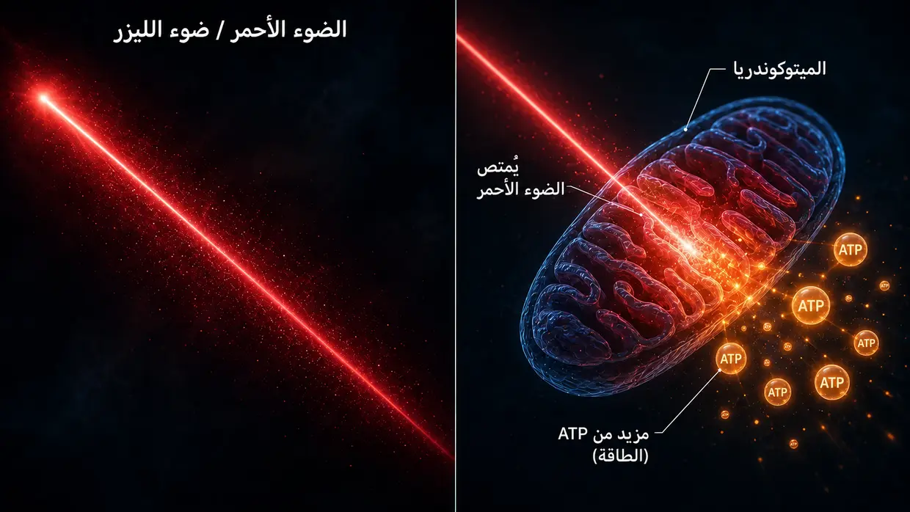
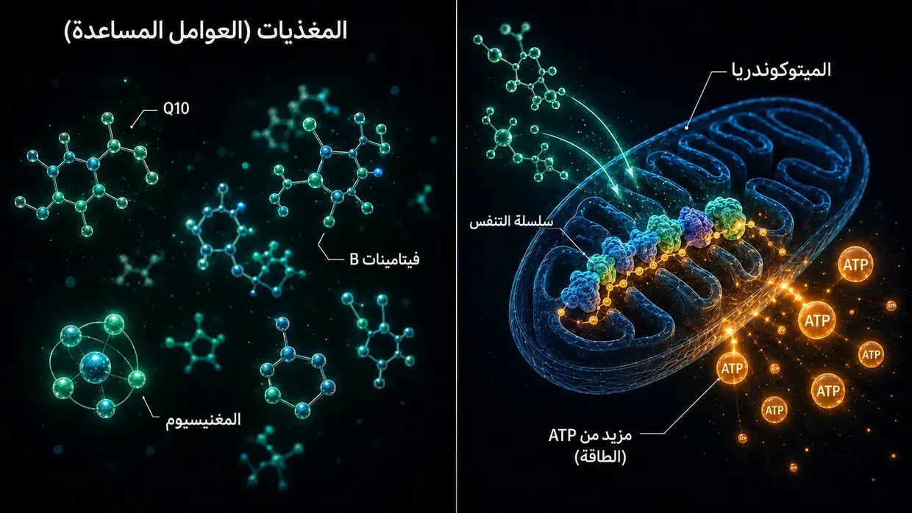

المصادر العلمية والأدلة السريرية
تعرض هذه الصفحة الأساس الذي يقوم عليه كل ما أكتبه في هذا الموقع. ونموذجي هو تفسيري الشخصي لما حدث على المستوى الخلوي في حالة طنين الأذن لدي. لكن اللبنات كلًّا على حدة — بروتينات الربط المتصالب (Crosslinker) بين خيوط الأكتين في الأهداب الساكنة (الستيريوسيليا)، وتنشيط إنزيمات الكالبين بفعل الضوضاء، وأيض ATP، والإصلاح بوساطة XIRP2، والكسب المركزي (Central Gain) في الدماغ، ومحور HPA المحلي في القوقعة، والتأثير الميتوكوندري لـQ10 وفيتامينات B والنياسين — ليست محض خيال. فهي موثَّقة في الأبحاث، ومجرَّبة في الممارسة الطبية.
مقدمة: نوعان من الأدلة
ملاحظة تمهيدية صريحة: أضع في هذه الصفحة نوعين من الأدلة — وأضعهما عمدًا جنبًا إلى جنب، من دون أن أرفع أحدهما منذ البداية فوق الآخر.
أولًا: دراسات الآليات المتعلقة ببروتينات الربط المتصالب وإنزيمات الكالبين وغيرها، من مجال البحث الأساسي. وهي أبحاث خاضعة لمراجعة الأقران (أي راجعها خبراء مستقلون) ومنشورة في دوريات مثل Nature Communications وJournal of Neuroscience وPNAS أو eLife. وهي تُظهر كيف تعمل الآلة الخلوية (أي العمليات التي تجري داخل الخلايا كلًّا على حدة) — كيف تثبّت بروتينات الربط المتصالب الأهداب الساكنة، وكيف تنشط إنزيمات الكالبين بفعل الضوضاء، وكيف يثبّت XIRP2 مواضع الانكسار تثبيتًا إسعافيًا، وكيف تعيد زيادة ATP السمع بعد أضرار الضوضاء إلى الحد الذي تسمح به القدرة الجسدية الفردية. وهذه الدراسات لا غنى عنها لفهم نموذجي لطنين الأذن الناجم عن الضوضاء.
ثانيًا: أدلة الممارسة السريرية لدى أطباء ذوي خبرة (أي ما رآه أطباء ذوو خبرة ووثّقوه مباشرةً لدى مرضى حقيقيين على مدى سنوات). ومن هذه الأصوات Dr. Lutz Wilden، الذي يعالج مرضى الأذن الداخلية باستمرار منذ عام 1987 — أي منذ أكثر من 35 عامًا — بالعلاج بالليزر منخفض المستوى، ويجري مخططات سمع قبل العلاج وبعده بوصفها توثيقًا قياسيًا. ويُضاف إلى ذلك آلاف مستخدمي الليزر المنزلي في أنحاء العالم، الذين يرافقون علاجهم الذاتي بفحوص قياس سمع للمتابعة. وفي سويسرا، قدّمت Tinnitool منذ تسعينيات القرن الماضي خدماتها لآلاف المرضى أيضًا وفق منطق التأثير نفسه (العلاج بالليزر منخفض المستوى ← زيادة ATP في الخلايا الشعرية). ويُضاف إليهم فريق Hahn في براغ (540 مريضًا في دراستين منشورتين)، وجامعة كيوتو في اليابان، وفريق بحث برازيلي — ووجد كل منهم تحسنات قابلة للقياس عندما كان الليزر قويًا بما يكفي. أما الدراسات التي استخدمت ليزرًا أضعف من اللازم ولم تجد شيئًا في اختبار منصف، فسأضعها في سياقها بصدق أدناه. وهناك أيضًا Dr. Dietrich Klinghardt وعمله الممتد عقودًا بشأن أعباء المعادن الثقيلة والسموم. وهذه الخبرة العملية لم تُنشر في معظمها في الدوريات العلمية الكبرى (مثل Nature Communications) — ولهذا أسباب يتحدث عنها Wilden نفسه. لكن ذلك لا يغيّر أن عددًا جديرًا فعلًا بالاعتبار من المرضى الحقيقيين تعافى بهذه الطريقة على مدى العقود الماضية، مع أدلة من قياس السمع.
لماذا يُعتدّ بمصدري الأدلة كليهما
أرى أن من الأصدق وضع مصدري الأدلة جنبًا إلى جنب بدل التظاهر بأن ما خضع لمراجعة الأقران هو وحده الحقيقة الوحيدة الجديرة بأن تؤخذ على محمل الجد. وفي رأيي، يرجع ذلك إلى أن جزءًا كبيرًا من تمويل أبحاث طنين الأذن يتجه بدرجة أكبر إلى تطوير المعينات السمعية ومسارات تطوير الأدوية المحمية ببراءات اختراع. أما تركيبات المغذيات التي لا يمكن احتكارها ببراءة، أو بروتوكولات الليزر المحددة بجرعات عالية، أو بروتوكولات إزالة السموم، فلا يوجد ببساطة اهتمام بحثي مؤسسي بها.
أنا لست طبيبًا ولا عالمًا ولا باحثًا. أنا شخص عانى من الحالة وشُفي مرتين، ولا تتعلق وثائق قياس السمع المتاحة لدي إلا بالمسار الأول وحده. لقد قرأت وبحثت وجرّبت بهوس شديد. وعندما أستشهد هنا بدراسة أو بطبيب، فهذا لا يعني أن ذلك دليل على أن طريقي سينجح معك. بل يعني أن اللبنات كلًّا على حدة التي أستند إليها تؤخذ على محمل الجد في الأبحاث والممارسة. وفي حالة الأعراض الحادة — ولا سيما طنين الأذن الحاد أو فقدان السمع — يُرجى أولًا استشارة طبيب أنف وأذن وحنجرة لكي تُفحص الأسباب العضوية.
أمر واحد أولًا قبل أن ندخل في التفاصيل: أهم ما خلصت إليه من بحثي كله هو نمط صادفته مرارًا وتكرارًا — ففي كل موضع رُفع فيه إنتاج الطاقة داخل الخلايا الشعرية بدرجة ملموسة، تحسّن طنين الأذن. ثلاثة مسارات مختلفة تمامًا، وقاسم مشترك واحد. وسأعرض لك ذلك بالتفصيل أدناه: مَن يريد الانتقال إليه فورًا، فليضغط هنا. أما سائر القراء، فسآخذهم أولًا إلى الأساس — كيف بُنيت الأذن، وما الذي يتضرر فيها.
الجزء 1: دراسات الآليات من البحث الأساسي
بروتينات الربط المتصالب بين خيوط الأكتين في الأهداب الساكنة
في الصفحة الرئيسية، أشبّه الأهداب الساكنة بحزمة من أعواد السباغيتي غير المطهية تمسكها معًا جسور بروتينية قصيرة — هي بروتينات الربط المتصالب (Crosslinker). وهذه البروتينات ليست اختراعًا مني. بل هي ثلاث عائلات بروتينية محددة — Plastin/Fimbrin (PLS1) وEspin (ESPN) وFascin-2 (FSCN2) — وقد وُثّق وجودها ووظيفتها في الأهداب الساكنة على المستوى الجزيئي منذ أكثر من 20 عامًا.
Krey JF, Krystofiak ES, Dumont RA, et al. (2016). Plastin 1 widens stereocilia by transforming actin filament packing from hexagonal to liquid. Journal of Cell Biology, 215(4), 467–482. PMID: 27811163. الرابط
هذه هي الدراسة المحورية لقياس أعداد بروتينات الربط المتصالب. وباستخدام قياس الطيف الكتلي، أثبت Krey et al. أن الهدب الساكن الواحد يحتوي نحو 30.500 جزيء من Plastin-1، و16.100 جزيء من Fascin-2، و14.800 جزيء من Espin بين خيوط الأكتين. ويُعد Plastin-1، بعد الأكتين نفسه، ثاني أكثر البروتينات وفرةً في الهدب الساكن بأكمله. وأظهرت الفئران التي تفتقر إلى بروتين Plastin-1 وظيفي أو بروتين Fascin-2 وظيفي انخفاضًا في وظيفة السمع، وكانت الفئران ذات الطفرتين هي الأشد تضررًا. كما تكون الأهداب الساكنة التي تفتقر إلى Plastin-1 أقصر وأنحف من أهداب النمط البري. وهذا هو الدليل التجريبي المباشر على أن بروتينات الربط المتصالب تحافظ فعليًا على السلامة البنيوية للأهداب الساكنة.
Perrin BJ, Strandjord DM, Narayanan P, et al. (2013). β-Actin and Fascin-2 Cooperate to Maintain Stereocilia Length. Journal of Neuroscience, 33(19), 8114–8121. PMID: 23658152. الرابط
دليل مباشر على ما يحدث عندما يتعطل Fascin-2 وظيفيًا: تُظهر الفئران ذات طفرة في Fascin-2 فقدانًا سمعيًا مترقيًا في الترددات العالية وقِصرًا محددًا في الصفين الثاني والثالث من الأهداب الساكنة. ويظل النوع الطافر من Fascin-2 قادرًا على الارتباط بالأكتين، لكنه لا يعود قادرًا على تشبيك الخيوط بفاعلية — وهذا تحديدًا ما يجعل الأهداب تفقد طولها. وهذه هي النتيجة البنيوية النهائية نفسها التي أصفها في الصفحة الرئيسية عند فقدان بروتينات الربط المتصالب الناجم عن الضوضاء، غير أن هذه النتيجة جرت محاكاتها هنا بطفرة جينية بدلًا من إحداثها بفعل شطرٍ بوساطة إنزيمات الكالبين.
Sekerková G, Zheng L, Loomis PA, et al. (2004). Espins are multifunctional actin cytoskeletal regulatory proteins in the microvilli of chemosensory and mechanosensory cells. Journal of Neuroscience, 24(23), 5445–5456. PMID: 15190118. الرابط
التوصيف البنيوي لبروتين Espin بوصفه بروتين ربط متصالب للأكتين في الأهداب الساكنة. وقد عُرّف Espin بوصفه بروتينًا يجمع خيوط الأكتين المتوازية في حزم، وهو لا يُثبَّط بالكالسيوم — وهذا مهم لأن داخل الأهداب الساكنة يتعرض لتقلبات الكالسيوم أثناء الوظيفة الطبيعية. والفئران التي تعاني خللًا في بروتينات Espin صماء وتعاني اضطرابات في التوازن. كما تسبب طفرات Espin صممًا وراثيًا لدى البشر أيضًا.
ما يعنيه كل ذلك مجتمِعًا: إذا كان اختلال بروتينات الربط المتصالب الثلاثة — Plastin/Fimbrin وEspin وFascin-2 — بسبب طفرة جينية أو تعطيل جيني يؤدي أصلًا إلى فقدان السمع وعيوب بنيوية في الأهداب الساكنة، فمن المعقول بيولوجيًا أن يؤدي الشطر المكتسب بفعل إنزيمات الكالبين الناجم عن الضوضاء لهذه البروتينات أو لبروتينات ربط متصالب قريبة منها — كما أصفه في الصفحة الرئيسية — إلى النتيجة البنيوية النهائية نفسها.
تنشيط إنزيمات الكالبين بفعل الضوضاء
عند التعرض للضوضاء، يتدفق مقدار هائل من الكالسيوم إلى الخلية الشعرية. وينشّط فرط الكالسيوم هذا إنزيمات الكالبين — وهي إنزيمات محللة للبروتين تعتمد على الكالسيوم، ثم تشطر البروتينات التي تربط الأكتين بعضه ببعض. وقد أثبت مختبرا أبحاث مستقلان، باستخدام مثبطات مختلفة للكالبين، أن هذه الآلية حقيقية.
Lai R, Fang Q, Wu F, Pan S, Haque K, Sha SH. (2023). Prevention of noise-induced hearing loss by calpain inhibitor MDL-28170 is associated with upregulation of PI3K/Akt survival signaling pathway. Frontiers in Cellular Neuroscience, 17, 1199656. الرابط
دليل مباشر على آلية الكالبين: تنشّط الضوضاء µ-Calpain وm-Calpain في الخلايا الشعرية، ويمنع مثبط الكالبين MDL-28170 فقدان السمع وفقدان المشابك كليهما. وتُظهر الدراسة أيضًا أن الكالبين يشطر البروتين البنيوي α-Fodrin — وهو بروتين يربط السبكترين بالأكتين في قشرة الخلية. وهذا ليس النوع نفسه تمامًا من بروتينات الربط المتصالب المتخصصة في الأهداب الساكنة، مثل Plastin/Espin/Fascin-2، لكنه يثبت أن الكالبين ينشط عند التعرض للضوضاء ويهاجم البروتينات التي تربط الأكتين. ومن هذا التقارب تنشأ فرضية معقولة مفادها أن بروتينات الربط المتصالب في الأهداب الساكنة قد تتضرر هي الأخرى.
Yamaguchi T, Yoneyama M, Ogita K. (2017). Calpain inhibitor alleviates permanent hearing loss induced by intense noise by preventing disruption of gap junction-mediated intercellular communication in the cochlear spiral ligament. European Journal of Pharmacology, 803, 187–194. PMID: 28366808. الرابط
تؤكد هذه الدراسة آلية الضرر الناجم عن الكالبين في مختبر ثانٍ وبمثبط آخر (PD150606). كما توسّع الصورة لتشمل موضع ضرر ثانٍ: فالكالبين يهاجم عند التعرض للضوضاء أيضًا التواصل عبر الوصلات الفجوية في الرباط الحلزوني — أي في الجدار الجانبي للقوقعة. ولا يقتصر ضرر الضوضاء قط على موضع واحد.
قراءة خلفية: Fettiplace R, Hackney CM. (2006). The sensory and motor roles of auditory hair cells. Nature Reviews Neuroscience, 7(1), 19–29. — المراجعة الكلاسيكية لبنية الخلايا الشعرية ووظيفتها.
إصلاح الأكتين بوساطة XIRP2 (الطور 1)
Wagner EL, Im JS, Sala S, et al. (2023). Repair of noise-induced damage to stereocilia F-actin cores is facilitated by XIRP2 and its novel mechanosensor domain. eLife, 12, e72681. PMID: 37294664. الرابط
هذه أهم دراسة آلية عن الإصلاح الذاتي للخلايا الشعرية. فعند التعرض للضوضاء، تنشأ «فجوات» قابلة للقياس في هيكل الأكتين داخل الأهداب الساكنة. وفي الفئران، تُغلق هذه الفجوات خلال أسبوع واحد بواسطة أكتين γ حديث التصنيع. ويستشعر بروتين الإصلاح XIRP2 مواضع الضرر ميكانيكيًا ويبدأ عملية الإصلاح. ومن دون XIRP2 تبقى الأضرار دائمة.
أصف XIRP2 في الصفحة الرئيسية بأنه «شريط لاصق مدرّع» يثبّت مواضع الانكسار تثبيتًا إسعافيًا (الطور 1). أما إصلاح الطور 2 الفعلي — أي بناء أكتين جديد وتركيب بروتينات ربط متصالب جديدة — فيستغرق في هذه الدراسة نحو أسبوع لدى فئران مختبرية تتلقى إمدادًا مثاليًا. والسؤال الحاسم هو ما يعنيه ذلك للإنسان البالغ المجهد الذي يظل في الوقت نفسه عالقًا في عجلة الهامستر الطاقية — لأنه غالبًا ما يفتقر تحديدًا إلى الطاقة التي يحتاج إليها هذا الإصلاح.
مموَّل من NIH (R01DC021176).
زيادة ATP بوصفها رافعةً للإصلاح: AC102
هذا هو جوهر بروتوكولي لطنين الأذن الناجم عن الضوضاء على المسار الدوائي: عندما تكون طاقة الخلية قليلة، فإنها، من وجهة نظري، تصلح نفسها ببطء شديد وبقدر غير كافٍ لمجاراة الأعباء اليومية. وفيما يلي الدراسات التي تُظهر أن هذا التصور يؤخذ على محمل الجد من المنظور الدوائي — إذ تطوّر شركة أدوية في برلين حاليًا دواءً يستهدف هذه الآلية تحديدًا.
Rommelspacher H, Bera S, Brommer B, Ward R et al. (2024). A single dose of AC102 restores hearing in a guinea pig model of noise-induced hearing loss to almost prenoise levels. PNAS, 121(15), e2314763121. PMID: 38557194. الرابط
هذه هي الدراسة المحورية حول AC102. فقد أظهرت الاختبارات المختبرية أن AC102 يزيد إنتاج ATP الخلوي بوضوح، وفي الوقت نفسه يفكّك أنواع الأكسجين التفاعلية (ROS). وفي النموذج الحيواني، حسّنت جرعة واحدة السمع بعد صدمة الضوضاء بدرجة دالة إحصائيًا — ووصف عنوان الدراسة ذلك بأنه «عودة إلى مستوى ما قبل الضوضاء تقريبًا» (وتحديدًا: تحسن بمقدار 13–31 dB عند فقدان سمع متوسط ناجم عن الضوضاء مقداره 80 dB — وهو تحسن دال إحصائيًا، لكنه ليس استعادة كاملة). والآليات — تنشيط إنتاج ATP، وخفض ROS، وحماية المشابك — هي بالضبط آليات نموذجي، ولكنها مفروضة هنا دوائيًا.
Tziridis K, Rasheed J, Kwiatkowska M, et al. (2025). A Single Dose of AC102 Reverts Tinnitus by Restoring Ribbon Synapses in Noise-Exposed Mongolian Gerbils. International Journal of Molecular Sciences, 26(11), 5124. الرابط
اختُبر هنا أيضًا ما إذا كان AC102 يعكس أنماط السلوك الخاصة بطنين الأذن. والنتيجة: نعم، إلى حد بعيد — كما تعافت المشابك الشريطية بين الخلايا الشعرية والعصب السمعي بدرجة دالة إحصائيًا. وهذا دليل مباشر على أن الوابل المستمر من الغلوتامات عند العصب السمعي يتوقف عندما تعود الطاقة الخلوية.
Nieratschker M, Yildiz E, Gerlitz M, et al. (2024). A preoperative dose of the pyridoindole AC102 improves the recovery of residual hearing in a gerbil animal model of cochlear implantation. Cell Death & Disease, 15, 531. الرابط
توسّع هذه الدراسة نطاق الأدلة المتعلقة بـAC102 ليشمل مسار ضرر ثانٍ: فالمادة الفعالة تحمي السمع المتبقي أيضًا عند صدمة زرع القوقعة. وهذا يُظهر أن الآلية تعمل بصرف النظر عن مسبب الضرر — سواء أكان صدمة ميكانيكية بفعل الضوضاء أم بفعل عملية جراحية، فإن سلسلة الطوارئ الخلوية واحدة، وتعمل رافعة ATP في الحالتين.
AudioCure Pharma GmbH. Clinical Study NCT05776459. يخضع AC102 حاليًا لدراسة أوروبية من المرحلة 2 لدى مرضى فقدان السمع الحسي العصبي المفاجئ (SSNHL) — وقد شملت 210 مرضى، واكتمل التجنيد، وما تزال النتائج مرتقبة. الرابط
التوتر ومحور HPA والقوقعة بوصفها عضوًا عصبيًا صمّاويًا
يصعب تناول طنين الأذن الناجم عن التوتر علميًا أكثر من طنين الأذن الناجم عن الضوضاء. والحاسم في نموذجي هنا هو الآتي: لا يولّد التوتر المزمن العام، عبر محور HPA، صوت طنين مستقلًا. لكنه قد يجعل الأذن الداخلية أكثر قابلية للتضرر. ومن خلال تنشيط الجهاز العصبي الودّي، قد ينخفض تدفق الدم؛ وإذا ضاقت الأوعية الدموية في الشريط الوعائي، فقد تصبح الأذن الداخلية أكثر عرضةً للضرر الناجم عن الضوضاء أو مؤثرات أخرى. وتصف الأعمال التالية حول نظام إشارات HPA الموضعي في القوقعة عمليات فسيولوجية داخل الأذن الداخلية. ولا أستخلص منها مسارًا مستقلًا لمحور HPA يولّد طنين الأذن.
Graham CE, Vetter DE. (2011). The mouse cochlea expresses a local hypothalamic-pituitary-adrenal equivalent signaling system and requires corticotropin-releasing factor receptor 1 to establish normal hair cell innervation and cochlear sensitivity. Journal of Neuroscience, 31(4), 1267–1278. PMID: 21273411. الرابط
الدراسة المحورية. تُعبّر قوقعة الفأر محليًا عن نظام إشارات محور HPA كامل: العامل المُطلِق للكورتيكوتروبين (CRF)، ومستقبل CRF1، وACTH، ومستقبل القشرانيات المعدنية، ومستقبل القشرانيات السكرية. وتُظهر الفئران التي عُطّل لديها مستقبل CRF1 تعصيبًا مضطربًا للخلايا الشعرية وانخفاضًا في حساسية القوقعة. وهكذا تصف الدراسة نظامًا تنظيميًا موضعيًا في القوقعة، لا دليلًا على مسار مستقل لطنين الأذن عبر محور HPA.
Graham CE, Basappa J, Vetter DE. (2010). A corticotropin-releasing factor system expressed in the cochlea modulates hearing sensitivity and protects against noise-induced hearing loss. Neurobiology of Disease, 38(2), 246–258. PMID: 20109547. الرابط
الدراسة السابقة لدراسة Graham/Vetter 2011: تُظهر أن نظام CRF الموضعي في القوقعة يعدّل حساسية السمع ويمكن أن يحمي من فقدان السمع الناجم عن الضوضاء.
Furuta H, Mori N, Sato C, et al. (1994). Mineralocorticoid type I receptor in the rat cochlea: mRNA identification by PCR and in situ hybridization. Hearing Research, 78(2), 175–180. PMID: 7982810. الرابط
الوصف التاريخي الأول: يُعبَّر عن مستقبلات القشرانيات المعدنية في الشريط الوعائي للقوقعة — أي تحديدًا في «بطارية» الأذن الداخلية التي تحافظ على مخزون البوتاسيوم في اللمف الداخلي. ويمكن للكورتيزول هناك أن يعدّل إفراز البوتاسيوم عبر مستقبلات القشرانيات المعدنية.
Mazurek B, Haupt H, Olze H, Szczepek AJ. (2012). Stress and tinnitus – from bedside to bench and back. Frontiers in Systems Neuroscience, 6, 47. الرابط
التوليف المنهجي الصادر عن مستشفى شاريتيه في برلين: يجمع Mazurek وSzczepek النتائج الأصلية التي توصل إليها Graham/Vetter وFuruta في ثلاث فرضيات قابلة للاختبار حول الكيفية التي يمكن أن يسبّب بها التوتر طنين الأذن — عبر نظام HPA الموضعي في القوقعة، وعبر تعديل الكورتيزول لمستقبلات القشرانيات المعدنية في الشريط الوعائي (وما يترتب على ذلك من أثر في إفراز البوتاسيوم)، وعبر اللدونة التي يتوسطها الغلوتامات في المسار السمعي. وهذه فرضيات المؤلفين؛ ولا أتبناها بوصفها نموذجي لنشأة الصوت.
Hébert S, Lupien SJ. (2007). The sound of stress: Blunted cortisol reactivity to psychosocial stress in tinnitus sufferers. Neuroscience Letters, 411(2), 138–142. PMID: 17084027. الرابط
يُظهر المصابون بطنين الأذن استجابة كورتيزولية متأخرة ومُسطَّحة للتوتر النفسي الاجتماعي الحاد. وبذلك تصف الدراسة استجابة متغيرة للتوتر لدى المصابين الذين شملهم البحث؛ ولا تُظهر أن إنهاك محور HPA يسبّب طنين الأذن.
Manohar S, Chen GD, Li L, Liu X, Salvi R. (2023). Chronic stress induced loudness hyperacusis, sound avoidance and auditory cortex hyperactivity. Hearing Research, 431, 108726. PMID: 36905854. الرابط
في هذا النموذج الحيواني، طوّرت الجرذان تحت ضغط مزمن ناجم عن الكورتيزول سلوكًا يدل على فرط الحساسية للأصوات وأنماطًا شبيهة بطنين الأذن في القشرة السمعية — من دون أي تعرض حاد للضوضاء. وهذا ليس دليلًا على مسار مستقل لطنين الأذن الناجم عن التوتر في نموذجي.
Schaette R, McAlpine D. (2011). Tinnitus with a Normal Audiogram: Physiological Evidence for Hidden Hearing Loss and Computational Model. Journal of Neuroscience, 31(38), 13452–13457. الرابط
يصف Schaette وMcAlpine نموذج الكسب المركزي (Central Gain): عندما ينخفض المدخل السمعي، يرفع نظام السمع المركزي مستوى حساسيته. وفي نموذجي، لا يفعل الكسب المركزي سوى تضخيم إشارة خاطئة نشطة موجودة بالفعل؛ ولا ينشأ صوت طنين الأذن من فقدان المدخل وحده.
Auerbach BD, Rodrigues PV, Salvi RJ. (2014). Central Gain Control in Tinnitus and Hyperacusis. Frontiers in Neurology, 5, 206.
Eggermont JJ, Roberts LE. (2004). The neuroscience of tinnitus. Trends in Neurosciences, 27(11), 676–682.
يعالج Auerbach وRodrigues وSalvi مفهوم الكسب المركزي في سياق طنين الأذن وفرط الحساسية للأصوات؛ وهذا هو موقف هذه المقالة الاستعراضية، وليس نموذجي لنشأة الصوت. ويمكن أن يجتمع طنين الأذن وفرط الحساسية للأصوات، إلا أنني لا أعدّهما أثرين جانبيين للتضخيم المركزي. أما العمل الكلاسيكي لـEggermont/Roberts فيقول إن طنين الأذن يرتبط بتغيّر النشاط العصبي التلقائي وتغيّر التنظيم المكاني للترددات في القشرة السمعية.
الصدمة النفسية، والتوتر المخزَّن، والاستثارة العصبية المصاحبة للمسارات المجاورة
ثمة مسار مركزي منفصل عن ذلك يتعلق بالسؤال الآتي: كيف يمكن لصدمة نفسية مخزَّنة أن تواصل إحداث أعراض جسدية بعد سنوات — وكيف يمكن لبؤرة توتر موضعية ومستقلة ذاتيًا في الدماغ أن تشارك فعليًا في تنشيط المراكز العصبية المجاورة؟
هذه هي تحديدًا الآلية التي يصفها Michael Prgomet لأغراض الشرح بأنها «مجال جهد كهروستاتيكي» (انظر القسم 14). وقد عرضتُ النموذج بلغة بسيطة على صفحتي عن طنين الأذن الناجم عن التوتر. ويبيّن هذا القسم أن اللبنات العصبية الحيوية الفردية التي يقوم عليها هذا النموذج راسخة علميًا. وتكمن أصالة هذا التوليف في الربط بين هذه اللبنات لتكوين نموذج تفسيري متماسك — أما الآليات الفردية نفسها فقد خضعت لمراجعة الأقران وأعيد تكرارها مرات عدة.
5.1.1 الصدمة النفسية تخلّف آثارًا عصبية حيوية قابلة للقياس
يُحدث التعرّض لتوتر شديد أو مزمن تغييرات موثقة في بنية مناطق معينة من الدماغ ووظيفتها. فالصدمة النفسية لا تبقى «نفسية فحسب»، بل تُشبَّك جسديًا داخل الجهاز العصبي.
McEwen BS, Nasca C, Gray JD. (2016). Stress Effects on Neuronal Structure: Hippocampus, Amygdala, and Prefrontal Cortex. Neuropsychopharmacology, 41(1), 3–23. PMID: 26076834. الرابط
توضح الدراسة أن التوتر المزمن يُحدث تغييرات بنيوية ووظيفية قابلة للقياس في الحُصين واللوزة الدماغية والقشرة أمام الجبهية. وهذه المناطق تحديدًا محورية للذاكرة والخوف والتقييم وتنظيم التوتر — أي إنها بالضبط البنى التي تؤدي دورًا في نمط توتر نشط باستمرار.
Sherin JE, Nemeroff CB. (2011). Post-traumatic stress disorder: the neurobiological impact of psychological trauma. Dialogues in Clinical Neuroscience, 13(3), 263–278. PMID: 22034143. الرابط
مراجعة للآثار العصبية الحيوية طويلة الأمد للصدمة النفسية: فرط استجابة اللوزة الدماغية، وقصور التحكم في القشرة أمام الجبهية، وتغيّرات الحُصين، وتغيّرات مستدامة في أنظمة هرمونات التوتر. فالصدمة النفسية ليست «منتهية بمجرد انتهاء الموقف» — بل تكون قد تشبّكت داخل الجهاز العصبي.
Yehuda R, LeDoux J. (2007). Response Variation following Trauma: A Translational Neuroscience Approach to Understanding PTSD. Neuron, 56(1), 19–32. PMID: 17920012. الرابط
يُظهر أن الصدمة النفسية يمكن أن تغيّر على المدى الطويل محور HPA، والنظام النورأدريناليني، وتفاعلية الجهاز العصبي الذاتي، ووظيفة الحُصين. وهذا هو الأساس الآلي لأنماط التوتر المخزَّنة التي يمكن أن تواصل عملها في الخلفية.
5.1.2 الحمل الألوستاتي — لماذا لا يصبح التوتر مشكلة إلا عندما يكون مزمنًا
التوتر الحاد المرتبط بموقف معين صحي ويمكن تحمّله جيدًا. والظواهر التي أصفها على صفحة طنين الأذن الناجم عن التوتر لا تظهر عند شجار عادي أو عبء حاد — بل لا تنشأ إلا عندما يعجز النظام عن التعافي وتتراكم الأعباء بمرور الوقت.
McEwen BS. (1998). Stress, Adaptation, and Disease: Allostasis and Allostatic Load. Annals of the New York Academy of Sciences, 840(1), 33–44. PMID: 9629234. الرابط
أسّس مفهوم الحمل الألوستاتي. التوتر الحاد مفيد؛ أما العبء المزمن والتراكمي فيضر بالنظام. وهذه النقطة تحديدًا تفصل نموذجي بدقة عن العبارة المضللة «التوتر يسبّب طنين الأذن بوجه عام». فالأمر لا يتعلق بتوتر الحياة اليومية — بل بأنظمة مثقلة سلفًا على نحو مزمن.
McEwen BS, Stellar E. (1993). Stress and the individual: mechanisms leading to disease. Archives of Internal Medicine, 153(18), 2093–2101. PMID: 8379800.
يصف الآليات التي يؤدي عبرها التوتر المزمن إلى المرض — من خلال العبء التراكمي، لا من خلال نوبات منفردة. ويوضح بجلاء لماذا لا تظهر هذه الظواهر لدى كل شخص يواجه توتر الحياة اليومية، بل لدى أشخاص يكون نظامهم مزعزعًا أصلًا على نحو مزمن.
5.1.3 التحسيس المركزي — المضخّم داخل الجهاز العصبي المثقل سلفًا
عند وجود عبء مزمن، يصبح الجهاز العصبي المركزي أكثر حساسية للمثيرات. ينخفض الكبح، وترتفع قابلية الاستثارة، وتنخفض عتبات التنبيه. وتصبح المثيرات التي كانت دون العتبة سابقًا كافية فجأة لإطلاق الأعراض. وهذا هو الوصف العلمي لما أصفه على صفحة طنين الأذن الناجم عن التوتر بأنه «نظام مثقل سلفًا ومنفتح على المثيرات».
Woolf CJ. (2011). Central sensitization: Implications for the diagnosis and treatment of pain. Pain, 152(3 Suppl), S2–S15. PMID: 20961685. الرابط
يعرّف التحسيس المركزي بأنه زيادة استجابة الخلايا العصبية المركزية للمثيرات الواردة العادية أو الواقعة دون العتبة. وهو ركيزة راسخة في أبحاث الألم الحديثة. وينقل نموذجي هذا المبدأ إلى طنين الأذن الناجم عن التوتر.
Latremoliere A, Woolf CJ. (2009). Central sensitization: a generator of pain hypersensitivity by central neural plasticity. The Journal of Pain, 10(9), 895–926. PMID: 19712899. الرابط
وصف مفصّل للآليات الخلوية والجزيئية للتحسيس المركزي. ويبيّن كيف يهيئ النظام المثقل سلفًا أصلًا الظروف التي تمكّن مجالات توتر صغيرة من أن تصبح مصحوبة بأعراض.
Yunus MB. (2008). Central sensitivity syndromes: a new paradigm and group nosology for fibromyalgia and overlapping conditions. Seminars in Arthritis and Rheumatism, 37(6), 339–352. PMID: 18191990. الرابط
يطبّق مفهوم التحسيس المركزي على الألم العضلي الليفي، والإرهاق المزمن، ومتلازمة القولون المتهيج، وطنين الأذن المزمن، والمتلازمات ذات الصلة. وهذا هو بالضبط الجسر الذي يرسّخ نموذجي لطنين الأذن الناجم عن التوتر علميًا.
5.1.4 الاقتران الإفابتي — الاستثارة الكهربائية المباشرة للخلايا العصبية المجاورة
هذا هو الجوهر الفيزيولوجي العصبي الصلب الكامن وراء استعارة فان دي غراف. فعندما تطلق منطقة عصبية نبضات قوية ومتزامنة، فإنها تولّد حقولًا كهربائية موضعية تستطيع التأثير فعليًا في الخلايا العصبية المجاورة — من دون مشبك تقليدي. وعند وجود نشاط كافٍ، يمكن لهذه الحقول أن تدفع الخلايا المجاورة فوق عتبة الاستثارة وأن تزامن نمط إطلاقها للنبضات. وهذه تحديدًا هي الآلية الكامنة وراء «العصب أ يطلق نبضات، والعصب ب يُسحب معه».
Anastassiou CA, Perin R, Markram H, Koch C. (2011). Ephaptic coupling of cortical neurons. Nature Neuroscience, 14(2), 217–223. PMID: 21240273. الرابط
دليل تجريبي مباشر على الاقتران الإفابتي في القشرة الدماغية. أظهرت الدراسة أن الحقول الكهربائية خارج الخلية تستطيع تغيير جهد غشاء الخلايا العصبية المجاورة ومزامنة توقيت جهد الفعل. وهذا هو الدليل المركزي على أن مجموعة من الخلايا العصبية شديدة النشاط تستطيع فعلًا أن تشارك كهربائيًا في تنشيط الخلايا المجاورة.
Buzsáki G, Anastassiou CA, Koch C. (2012). The origin of extracellular fields and currents — EEG, ECoG, LFP and spikes. Nature Reviews Neuroscience, 13(6), 407–420. PMID: 22595786. الرابط
مراجعة أساسية لنشأة الحقول الكهربائية في الدماغ. تصف كيف تستطيع مجموعات الخلايا العصبية النشطة بتزامن أن تؤثر وظيفيًا في خلايا عصبية أخرى من خلال تدرجات الجهد. وتوضح أن الأمر لا يتعلق بـ«بروق كبيرة» مثل تلك الموجودة في كرة عالية الجهد — بل بتأثيرات حقلية صغيرة ومرتبطة موضعيًا، لكنها حقيقية وفعّالة بيولوجيًا.
Fröhlich F, McCormick DA. (2010). Endogenous electric fields may guide neocortical network activity. Neuron, 67(1), 129–143. PMID: 20624597. الرابط
يُظهر أن الحقول الكهربائية الذاتية المنشأ لا ترافق نشاط الشبكات العصبية فحسب، بل تشارك سببيًا في توجيهه. وهذا مسمار ثقيل في نعش الافتراض القائل إن تأثيرات الحقول الكهربائية في الدماغ ليست سوى ظاهرة مصاحبة.
5.1.5 الإيقاد العصبي (Kindling) — الاستثارة المتكررة ترسّخ النمط
عندما تتعرض منطقة عصبية مرارًا لاستثارة دون العتبة، يصبح تنشيطها أسهل فأيسر بمرور الوقت — وتستقطب معها على نحو متزايد مناطق مجاورة. وهذا مفهوم راسخ في أبحاث الصرع، ونُقل في الوقت الحاضر أيضًا إلى حالات الألم المزمن والصدمة النفسية والاستثارة.
Goddard GV, McIntyre DC, Leech CK. (1969). A permanent change in brain function resulting from daily electrical stimulation. Experimental Neurology, 25(3), 295–330. PMID: 4981856.
العمل الأصلي الكلاسيكي حول ظاهرة الإيقاد العصبي. تُحدث الاستثارة المتكررة دون العتبة تغيرًا دائمًا في وظيفة الدماغ — ويصبح تنشيط المنطقة أسهل فأيسر بمرور الوقت.
Post RM. (2007). Kindling and sensitization as models for affective episode recurrence, cyclicity, and tolerance phenomena. Neuroscience & Biobehavioral Reviews, 31(6), 858–873. PMID: 17555817. الرابط
نقل مفهوم الإيقاد العصبي إلى الاضطرابات الوجدانية واضطراب ما بعد الصدمة وحالات التوتر المزمن. ويوضح علميًا لماذا يمكن لأنماط التوتر التي يعاد تنشيطها مزمنًا ألا تهدأ بمرور الوقت، بل أن تصبح أقوى وأوسع نطاقًا — وهي بالضبط الظاهرة التي أصفها على صفحة طنين الأذن الناجم عن التوتر.
5.1.6 تنشيط الخلايا الدبقية والالتهاب العصبي — المضخّم البيوكيميائي
تنشّط الاستثارة المزمنة الخلايا الدبقية الصغيرة والخلايا النجمية. وتطلق هذه الخلايا رُسُلًا كيميائية (TNF-α، وIL-1β، وIL-6) تزيد على نحو قابل للقياس قابلية الخلايا العصبية المحيطة للاستثارة — وبذلك تنقل المنطقة بأكملها إلى حالة يسهل تنشيطها فيها. وهذا هو المضخّم البيوكيميائي بين «النظام المثقل سلفًا» و«قدرة مجال التوتر على الاختراق».
Ji RR, Nackley A, Huh Y, Terrando N, Maixner W. (2018). Neuroinflammation and Central Sensitization in Chronic and Widespread Pain. Anesthesiology, 129(2), 343–366. PMID: 29462012. الرابط
دليل مباشر على الكيفية التي يدفع بها تنشيط الخلايا الدبقية التحسيس المركزي. فالخلايا الدبقية الصغيرة والخلايا النجمية ليست مجرد خلايا داعمة خاملة — بل تعدّل قابلية الخلايا العصبية للاستثارة بنشاط، ويمكنها في ظل العبء المزمن أن تنقل النسيج العصبي إلى حالة أكثر انفتاحًا على المثيرات بصورة دائمة.
Michopoulos V, Powers A, Gillespie CF, Ressler KJ, Jovanovic T. (2017). Inflammation in Fear- and Anxiety-Based Disorders: PTSD, GAD, and Beyond. Neuropsychopharmacology, 42(1), 254–270. PMID: 27510423. الرابط
يرتبط اضطراب ما بعد الصدمة والقلق المزمن بتغيّرات التهابية قابلة للقياس في الجهاز العصبي. وهكذا تكتمل الدائرة: الصدمة النفسية ← التوتر ← الالتهاب العصبي ← نسيج أكثر انفتاحًا على المثيرات ← سهولة أكبر في تنشيط أنماط التوتر المخزَّنة.
5.1.7 اختلال النظم المهادي القشري — صلة مباشرة بطنين الأذن
تُظهر دراسات MEG وEEG لدى المصابين بطنين الأذن المزمن أنماط تذبذب مرضية بين المهاد والقشرة السمعية. ويولّد نمط نشاط متغير موضعيًا اقترانات مستمرة بين ثيتا وغاما، يمكن أن تسهم في الإدراك الدائم للصوت. وهذا هو الجسر الفيزيولوجي العصبي المباشر بين مجال توتر مفرط النشاط وإدراك دائم لطنين الأذن.
Llinás RR, Ribary U, Jeanmonod D, Kronberg E, Mitra PP. (1999). Thalamocortical dysrhythmia: A neurological and neuropsychiatric syndrome characterized by magnetoencephalography. PNAS, 96(26), 15222–15227. PMID: 10611366. الرابط
أسّس مفهوم اختلال النظم المهادي القشري بوصفه آليةً لأعراض عصبية مزمنة — مقيسة بتقنية MEG عالية الحساسية. وهي تحديدًا أجهزة MEG التي يمكن بها أيضًا إظهار مجالات جهد صغيرة جدًا ومرتبطة موضعيًا في الدماغ.
De Ridder D, Vanneste S, Langguth B, Llinás R. (2015). Thalamocortical Dysrhythmia: A Theoretical Update in Tinnitus. Frontiers in Neurology, 6, 124. PMID: 26106362. الرابط
نقل مباشر للمفهوم إلى طنين الأذن المزمن باستخدام بيانات MEG. ويُظهر أن اقترانات ثيتا–غاما المرضية في القشرة السمعية قابلة للقياس لدى المصابين بطنين الأذن المزمن.
Vanneste S, De Ridder D. (2012). The auditory and non-auditory brain areas involved in tinnitus. An emergent property of multiple parallel overlapping subnetworks. Frontiers in Systems Neuroscience, 6, 31. PMID: 22586375. الرابط
يُظهر أن طنين الأذن المزمن يرتبط بتغيّر تفاعل شبكات دماغية متعددة — سمعية وغير سمعية. وترتبط شبكات التوتر والضيق النفسي في هذا السياق وظيفيًا بالشبكات السمعية. وهذه هي الصلة التي يمكن أن ينتقل عبرها تأثير نمط توتر مفرط النشاط إلى الجهاز السمعي.
5.1.8 إعادة توطيد الذاكرة — لماذا يمكن أصلًا حل أنماط التوتر القديمة
لا تكون الذكريات العاطفية القديمة مشبّكة إلى الأبد. فعندما يعاد تنشيطها، تدخل مؤقتًا في حالة غير مستقرة ويمكن تخزينها من جديد — بعد تغييرها أو تفريغ شحنتها. وهذا هو الأساس العلمي الذي يفسر لماذا يمكن أصلًا لأساليب مثل أسلوب Michael Prgomet أو EMDR أو غيرها من المناهج العلاجية القائمة على إعادة التنشيط أن تنجح.
Nader K, Schafe GE, Le Doux JE. (2000). Fear memories require protein synthesis in the amygdala for reconsolidation after retrieval. Nature, 406(6797), 722–726. PMID: 10963596. الرابط
العمل الأصلي الكلاسيكي حول إعادة توطيد الذاكرة. يُظهر في نموذج حيواني أن ذكرى خوف مخزَّنة من قبل يمكن أن تعود بعد استرجاعها مجددًا إلى حالة غير مستقرة، وأنها تحتاج إلى أن تستقر من جديد — ويمكن خلال ذلك تغييرها على نحو موجّه.
Lane RD, Ryan L, Nadel L, Greenberg L. (2015). Memory reconsolidation, emotional arousal, and the process of change in psychotherapy: New insights from brain science. Behavioral and Brain Sciences, 38, e1. PMID: 24827452. الرابط
نقل المفهوم إلى التطبيق العلاجي. ويُظهر أن إعادة التنشيط الموجّهة مع معالجة جديدة لاحقة يمكن أن تغيّر البرامج العاطفية القديمة. وهذه الآلية تحديدًا هي التي يقوم عليها عمل Prgomet — حتى وإن لم تكن طريقته المحددة مثبتة بتجارب عشوائية مضبوطة كلاسيكية.
5.1.9 التوليف: نموذجي في صورة واحدة
عندما نجمع اللبنات الفردية، تتكوّن الصورة الإجمالية الآتية — وهي تحديدًا ما أصفه بلغة بسيطة على صفحتي عن طنين الأذن الناجم عن التوتر:
- الصدمة النفسية أو التوتر المزمن يغيّر بنية الدماغ ومحور HPA ← يحمل النظام بنية أساسية متغيرة (5.1.1)
- يتراكم الحمل الألوستاتي، ولا يعود النظام قادرًا على التعافي ← ينشأ عبء مسبق (5.1.2)
- يجعل التحسيس المركزي الجهاز العصبي بأكمله أكثر انفتاحًا على المثيرات ← عتبات أقل (5.1.3)
- تعزّز الخلايا الدبقية والالتهاب العصبي الانفتاح على المثيرات بيوكيميائيًا (5.1.6)
- يعيد محفّز تنشيط نمط التوتر المخزَّن ← تطلق المنطقة الموضعية نبضات أقوى
- جعل الإيقاد العصبي المنطقة أكثر استعدادًا باستمرار للاستجابة بمرور الوقت (5.1.5)
- يتيح الاقتران الإفابتي المشاركة الكهربائية في تنشيط المسارات المجاورة (5.1.4)
- إذا أصابت هذه المشاركة في التنشيط الشبكات المعالِجة للسمع، فقد ينشأ عنها إدراك حقيقي للصوت
- يثبّت اختلال النظم المهادي القشري هذا النمط (5.1.7)
- تُظهر إعادة توطيد الذاكرة أن مثل هذه الأنماط يمكن أن تنحل عندما يعاد تنشيط المصدر الأصلي ومعالجته من جديد على نحو موجّه (5.1.8)
خضعت كل لبنة من هذه اللبنات العشر لمراجعة الأقران وأعيد تكرارها مرات عدة. ولا تكمن أصالة نموذجي في آلية منفردة — بل في الربط. ونادرًا ما يُفكَّر في هذا الترابط بوصفه كلًا واحدًا داخل الممارسة الراسخة لطب الأنف والأذن والحنجرة، ولهذا كثيرًا ما يُرفَض طنين الأذن الناجم عن التوتر باعتباره «نفسيًا فحسب» أو يُعالَج بتدابير منفردة مثل CBT، من دون شرح الآلية الكامنة وراءه.
ما لا يدّعيه هذا القسم
لكي يظل الأمر منضبطًا — ما لا يُدَّعى هنا هو:
- لا يُدَّعى أن كل طنين أذن مزمن ناجم عن التوتر. فطنين الأذن الناجم عن الضوضاء، وطنين الأذن الناجم عن السمية الأذنية، وأشكال أخرى لها أسباب رئيسية مختلفة (انظر الأقسام المعنية).
- لا يُدَّعى أن طريقة Michael Prgomet المحددة مثبتة بدراسات كلاسيكية خاضعة لمراجعة الأقران (انظر القسم 14). والمثبت هو الآليات العصبية الحيوية الفردية التي يقوم عليها نموذجه التفسيري.
- لا يُدَّعى أن جميع الأعراض النفسية الجسدية في حالات التوتر المزمن تنشأ عبر هذه الآلية تحديدًا. فثمة مسارات أخرى عديدة.
- لا يُقدَّم أي وعد بالشفاء. ويمكن أن تختلف المسارات الفردية بدرجة كبيرة.
وما يُسجَّل هنا هو أن اللبنات الفردية التي تدعم نموذجي لطنين الأذن الناجم عن التوتر راسخة في العلم.
طنين الأذن الناجم عن الأدوية والسموم
تهاجم بعض الأدوية والمواد الضارة الخلايا الشعرية مباشرةً. وتختلف الآلية عن آلية الضوضاء — لكن نقطة النهاية الخلوية تكون هي نفسها في الغالب: فرط تحميل الميتوكوندريا بالكالسيوم، ونقص ATP، والاستماتة. تقارب النموذج عبر مسار ثانٍ مستقل.
Salvi R, Ding D, Manohar S, et al. (2022). Salicylate Ototoxicity, Tinnitus, and Hyperacusis. Springer Nature, Handbook of Neurotoxicity. الرابط
مراجعة شاملة حول السمية الأذنية الناجمة عن الأسبرين. يعطّل الساليسيلات بروتين بريستين — المحرك الكهروميكانيكي للخلايا الشعرية الخارجية — ويُطلِق على المستوى المركزي استجابةً مرتبطةً بطنين الأذن. تكون آثار الجرعة الزائدة الحادة قابلة للعكس، أما الجرعة العالية المزمنة فقد تُحدث تغيرات بنيوية دائمة.
Sheppard A, Hayes SH, Chen GD, et al. (2014). Review of salicylate-induced hearing loss, neurotoxicity, tinnitus and neuropathophysiology. Acta Otorhinolaryngologica Italica, 34(2), 79–93. الرابط
مراجعة تفصيلية لتأثيرات الساليسيلات.
Esterberg R, Linbo T, Pickett SB, et al. (2016). Mitochondrial calcium uptake underlies ROS generation during aminoglycoside-induced hair cell death. Journal of Clinical Investigation. الرابط
تدخل المضادات الحيوية من فئة الأمينوغليكوزيدات (جنتاميسين، ستربتومايسين) إلى الخلايا الشعرية، وتحفّز دخول الكالسيوم إلى الميتوكوندريا، مما يؤدي إلى إنتاج هائل لأنواع الأكسجين التفاعلية (ROS). ومن الناحية الآلية، هذه هي بالضبط سلسلة الكالسيوم–الميتوكوندريا التي أصفها في الصفحة الرئيسية — لكن بمحفّز كيميائي بدلًا من محفّز ميكانيكي.
Jiang M, Karasawa T, Steyger PS. (2017). Aminoglycoside-Induced Cochleotoxicity: A Review. Frontiers in Cellular Neuroscience, 11, 308. الرابط
مراجعة لسمية الأمينوغليكوزيدات: الدخول عبر قنوات التحويل الميكانيكي، وتضرر الميتوكوندريا، والاستماتة.
الإنزيم المساعد Q10 وحماية الميتوكوندريا
كان Q10 مكوّنًا ثابتًا في بروتوكولي. وهو ناقل للإلكترونات في سلسلة التنفس داخل الميتوكوندريا، ومضاد قوي للأكسدة في الوقت نفسه.
Fetoni AR, Piacentini R, Fiorita A, Paludetti G, Troiani D. (2009). Water-soluble Coenzyme Q10 formulation (Q-ter) promotes outer hair cell survival in a guinea pig model of noise induced hearing loss (NIHL). Brain Research, 1257, 108–116. PMID: 19133240. الرابط
نموذج حيواني: خفّض Q10 استماتة الخلايا الشعرية الخارجية بعد رضح الضوضاء بدرجة دالة إحصائيًا.
Staffa P et al. (2014). Activity of coenzyme Q10 (Q-Ter multicomposite) on recovery time in noise-induced hearing loss. Noise and Health. الرابط
دراسة بشرية صغيرة (30 مشاركًا): قصّر Q10 القابل للذوبان في الماء مدة التعافي بعد التعرض للضوضاء وخفّض طنين الأذن الناجم عن الضوضاء.
Astolfi L et al. (2016). Coenzyme Q10 plus Multivitamin Treatment Prevents Cisplatin Ototoxicity in Rats. PLoS ONE, 11(9), e0162106. PMID: 27632426.
حمى Q10 مع الفيتامينات المتعددة الجرذان من أضرار السمية الأذنية الناجمة عن دواء العلاج الكيميائي سيسبلاتين — آلية الحماية نفسها على مسار ثالث.
المغنيسيوم وفيتامين B12
Cevette MJ, Barrs DM, Patel A, et al. (2011). Phase 2 study examining magnesium-dependent tinnitus. International Tinnitus Journal, 16(2), 168–173. PMID: 22249877. الرابط
دراسة من Mayo Clinic: أدى إعطاء 532 mg من المغنيسيوم يوميًا على مدى ثلاثة أشهر إلى انخفاض دال إحصائيًا في درجات عبء طنين الأذن.
Singh C, Kawatra R, Gupta J, et al. (2016). Therapeutic role of Vitamin B12 in patients of chronic tinnitus: A pilot study. Noise & Health, 18(81), 93–97. الرابط
دراسة تجريبية أولية مزدوجة التعمية: كان 42,5 % من مرضى طنين الأذن يعانون نقصًا في فيتامين B12. أما الذين كانوا يعانون نقصًا وعولجوا بحقن B12 فأظهروا تحسنات دالة إحصائيًا.
Shemesh Z, Attias J, Ornan M, et al. (1993). Vitamin B12 deficiency in patients with chronic-tinnitus and noise-induced hearing loss. American Journal of Otolaryngology, 14(2), 94–99. PMID: 8484483. الرابط
أول توصيف تاريخي: كان 47 % من المصابين بطنين الأذن وفقدان السمع الناجم عن الضوضاء يعانون نقصًا في B12 — مقابل 27 % لدى المتضررين من الضوضاء من دون طنين الأذن، و19 % فقط لدى الأشخاص ذوي السمع الطبيعي.
التوافر الحيوي وامتصاص المغذيات
أشرح في صفحتي عن التوافر الحيوي لماذا يكون شكل المغذيات وطريقة تناولها لدى الأشخاص الواقعين تحت توتر مزمن أهم في كثير من الأحيان من قائمة المكوّنات. والفسيولوجيا الكامنة وراء ذلك راسخة — فهي أساس العلاج بالإماهة الفموية المستخدم في جميع أنحاء العالم، والذي أنقذ ملايين الأرواح منذ ستينيات القرن العشرين.
Loo DDF, Zeuthen T, Chandy G, Wright EM. (1996). Cotransport of water by the Na+/glucose cotransporter. PNAS. الرابط
الدراسة الأساسية حول الناقل المشترك SGLT1: في كل دورة نقل، يُضخ الصوديوم والغلوكوز ونحو 260 جزيئًا من الماء إلى داخل الجسم في الوقت نفسه.
Buccigrossi V et al. (2020). Potency of Oral Rehydration Solution in Inducing Fluid Absorption is Related to Glucose Concentration. Scientific Reports, 10, 7803. الرابط
لا يعمل كل مزيج من الصوديوم والغلوكوز بالطريقة نفسها — إذ تبلغ النسبة المثلى نحو 60 mmol/L من الصوديوم و111 mmol/L من الغلوكوز. ويجب ضبط التركيبة بدقة.
الفئران مقابل البشر — لماذا أتعامل بحذر مع النماذج الحيوانية
Valero MD, Burton JA, Hauser SN, et al. (2017). Noise-induced cochlear synaptopathy in rhesus monkeys (Macaca mulatta). Hearing Research, 353, 213–223. PMID: 28712672. الرابط
قِيسَ لدى الرئيسيات فقدان في المشابك بنسبة 12-27 في المئة بعد التعرض للضوضاء — مقابل 40-55 في المئة لدى الفئران. وتتضرر الرئيسيات (ومن ثم البشر أيضًا على الأرجح) بدرجة أقل من الفئران عند التعرض للضوضاء مرة واحدة.
لكن ينبغي الحذر من الاستنتاج العكسي: انخفاض القابلية الأولية للتضرر لا يعني تلقائيًا قدرة أفضل على الإصلاح. بل على العكس — يجمع الإنسان في ظروف الحياة اليومية بين انخفاض الإصلاح التلقائي (بسبب التوتر، وقلة النوم، وضعف الإمداد) وبين تاريخ أوسع وأقدم من الأضرار. وهذه أطروحة محورية في حجتي.
الخيط الناظم: رفع ATP = تحسّن طنين الأذن
قبل أن أدخل في الأقسام التفصيلية، أودّ أن أريك النتيجة المحورية التي يقوم عليها كل شيء. إذا كان هناك شيء واحد فقط ينبغي أن تخرج به من صفحة المصادر هذه، فهو الآتي:
كلما زِيدَ إنتاج ATP في الخلايا الشعرية للأذن الداخلية خلال العقود الأخيرة، في أي مكان من العالم وبأي طريقة كانت، تحسّن طنين الأذن.
هذه ليست نظرية ولا تفكيرًا رغائبيًا. إنها النتيجة المتسقة لـثلاثة مسارات علاجية مستقلة تمامًا، خضعت للبحث والتطبيق على أيدي علماء وأطباء في ما لا يقل عن عشرة بلدان مختلفة، باستخدام أساليب مختلفة، وعلى مجموعات مختلفة من المرضى. وهذه هي المسارات الثلاثة – وكلها تقود إلى نقطة النهاية البيوكيميائية نفسها.
المسار 1: رفع مستوى ATP بواسطة ضوء الليزر (التعديل الحيوي الضوئي / LLLT)

يمتص أكسيداز السيتوكروم c في سلسلة التنفس داخل الميتوكوندريا ضوء الليزر ضمن نطاق 600-900 nm. والنتيجة البيوكيميائية هي: مزيد من ATP، وإجهاد تأكسدي أقل، وتمكُّن الخلية من الخروج من حالة الطوارئ الطاقية.
أهم ممثلي هذا المسار:
- Dr. Lutz Wilden، Bad Füssing/Ibiza، منذ 1987 – عالج آلاف مرضى طنين الأذن بليزر عالي الجرعة بطول موجي 830 nm، ووثّق قياسات السمع، ونشر نتائج سريرية (التفاصيل والتقييم الصريح في القسم 12)
- مجموعة Hahn، جامعة كارلوفا في براغ، 2001/2012 – 420 مريضًا في الدراسة الأكبر من دراستين، وتحسن موضوعي في طنين الأذن لدى 56,7 % بمعدل 30 dB من خلال الجمع بين الليزر + الجنكة (EGb 761) (يدعم العلاج المركب، لا العلاج بالليزر وحده)
- Tauber et al.، جامعة لودفيغ ماكسيميليان في ميونخ، 2003 – نظام TCL لتشعيع القوقعة عبر الصماخ
- Cuda & De Caria، إيطاليا، 2008 – الجمع بين الاستشارة وLLLT
- Teggi et al.، مستشفى San Raffaele في ميلانو، 2008/2009 – LLLT في مرض منيير
- Mollasadeghi et al.، إيران، 2013 – تجربة عشوائية مضبوطة مزدوجة التعمية عند طنين الأذن الناجم عن الضوضاء، بنتيجة دالة إحصائيًا
- Shiomi et al.، جامعة كيوتو، 1997 – 40 mW، 830 nm عبر الصماخ، من الروّاد
- Panhóca et al.، البرازيل، 2023 – تجربة عشوائية مضبوطة مقارنة، وكان LLLT الإجراء الأكثر فاعلية
← للاطلاع على التفاصيل الكاملة، انظر القسم 11: منطق جرعة LLLT، والقسم 12: Dr. Wilden.
المسار 2: رفع مستوى ATP بواسطة المستحضرات الدوائية (AC102)
مادة فعالة دوائية طُوِّرت في برلين، وتتدخل مباشرةً في إنتاج ATP داخل الميتوكوندريا، وتفكك في الوقت نفسه أنواع الأكسجين التفاعلية (جزيئات فضلات عدوانية تهاجم الخلية من الداخل – وهي نوع من صدأ الخلية). تلتقط صناعة الأدوية هنا ما يفعله Wilden وHahn منذ عقود – ولكن في صورة دواء قابل للحصول على براءة اختراع.
أهم ممثلي هذا المسار:
- Rommelspacher et al.، AudioCure Pharma Berlin، مجلة PNAS عام 2024 – جرعة واحدة تحسن السمع بوضوح بعد صدمة ضوضائية في نموذج حيواني (بصورة دالة إحصائيًا، ولكن من دون استعادة كاملة)، مع رفع ATP، وتقليل أنواع الأكسجين التفاعلية (صدأ الخلية)، وحماية المشابك العصبية
- Tziridis et al.، مجلة Int. J. Mol. Sci. عام 2025 – تتعافى المشابك الشريطية (مواضع الاتصال الدقيقة التي تنقل عبرها الخلايا السمعية إشارتها إلى العصب السمعي)، وتتراجع أنماط السلوك الخاصة بطنين الأذن
- Nieratschker et al.، مجلة Cell Death & Disease عام 2024 – فعّال أيضًا عند صدمة زراعة القوقعة
- الدراسة السريرية للمرحلة 2، NCT05776459 – تُجرى في أنحاء أوروبا على 210 مرضى مصابين بـSSNHL (أشخاص لديهم فقدان سمع مفاجئ، أي فقدان مفاجئ للسمع في الأذن الداخلية)
← للاطلاع على التفاصيل الكاملة، انظر القسم 4.
المسار 3: رفع مستوى ATP بواسطة العناصر الغذائية

عوامل مساعدة للميتوكوندريا تدعم سلسلة التنفس مباشرةً أو تفتحها. من دون كمية كافية من Q10 لا يسير نقل الإلكترونات بين المعقّدين I/II والمعقّد III. ومن دون كمية كافية من B12 تُصاب الألياف العصبية بزوال الميالين، بما في ذلك العصب السمعي. ومن دون كمية كافية من المغنيسيوم لا تعمل نحو 600 تفاعلات إنزيمية، بما فيها تخليق ATP نفسه. وتحمي مضادات الأكسدة، مثل فيتامينَي C وE، والسيلينيوم، والزنك، وحمض ألفا ليبويك، الخلية من أنواع الأكسجين التفاعلية التي تنشأ نتيجة حالة الطوارئ الطاقية.
3.1 العوامل المساعدة التقليدية للميتوكوندريا (Q10، المغنيسيوم، B12)
- Fetoni et al.، Brain Research عام 2009 – يقلل Q10 استماتة الخلايا الشعرية الخارجية بعد صدمة ضوضائية بصورة دالة إحصائيًا
- Staffa et al.، Noise & Health عام 2014 – يقصر Q10 مدة التعافي بعد التعرض للضوضاء، ويقلل طنين الأذن
- Astolfi et al.، PLOS One عام 2016 – يحمي Q10 مع الفيتامينات المتعددة من السمية الأذنية للسيسبلاتين
- Cevette et al.، Mayo Clinic عام 2011 – يقلل تناول 532 mg من المغنيسيوم على مدى 3 أشهر العبء الناجم عن طنين الأذن بصورة دالة إحصائيًا (مهم: دراسة مفتوحة من دون مجموعة ضابطة تتلقى دواءً وهميًا، ولذلك فهي استرشادية، لكنها ليست دليلًا حاسمًا، لأن طنين الأذن يُظهر مسارًا تلقائيًا قويًا وتأثيرًا قويًا للدواء الوهمي)
- Singh et al.، Noise & Health عام 2016 – لدى 42,5 % من مرضى طنين الأذن نقص في B12، ويُحدث التعويض تحسنًا ذا دلالة إحصائية لدى المرضى المصابين بالنقص
- Shemesh et al.، 1993 – أول وصف تاريخي للعلاقة بين B12 وطنين الأذن
← للاطلاع على التفاصيل الكاملة، انظر القسم 7 والقسم 8.
3.2 النياسين / فيتامين B3 / NAD+ – الرافعة الأكثر مباشرةً على الإطلاق لرفع ATP
الجرعات المشار إليها هنا مأخوذة من دراسات منشورة، وليست توصيات للتداوي الذاتي. تحدث مع طبيبك قبل تناول أي مكمل – ولا سيما بجرعات أعلى.
النياسين (فيتامين B3، بأشكاله: حمض النيكوتينيك، والنيكوتيناميد، ونيكوتيناميد ريبوسيد) هو السليفة الأيضية المباشرة لـNAD+ وNADH – وهما مرافقا الإنزيم في سلسلة التنفس داخل الميتوكوندريا. ومن دون كمية كافية من NAD+ لا تستطيع دورة كريبس إمداد سلسلة التنفس بالإلكترونات، ومن دون هذه الإلكترونات لا يُنتج أي ATP. لذلك ليس النياسين مجرد «عنصر غذائي آخر لطنين الأذن»، بل هو سليفة مباشرة لإنتاج ATP في الخلايا الشعرية. فإذا كان نموذجي صحيحًا – أي إن طنين الأذن المزمن أزمة طاقة في الخلية الشعرية – فمن المفترض أن تساعد مكملات النياسين. ولكي أظل صادقًا علميًا هنا: الدراسات السريرية المباشرة عن النياسين في حالة طنين الأذن قديمة (ومعظمها يعود إلى الفترة الممتدة من أربعينيات القرن العشرين إلى ثمانينيات القرن نفسه)، وهي غير مضبوطة في معظمها. صحيح أن هناك تقارير إيجابية امتدت عقودًا من ممارسة الطب الطبيعي، لكن لا يوجد دليل حديث من تجربة عشوائية مضبوطة مزدوجة التعمية على أن النياسين يحسن طنين الأذن لدى البشر. أما من ناحية الآلية، فالنهج مسنود على نحو ممتاز، حتى وإن لم يكن قد أُثبت سريريًا بصورة نهائية لطنين الأذن لدى البشر (الثقة هنا موضوعة في مسار الممارسة).
احمرار النياسين – ولماذا هو مهم بيولوجيًا
من يتناول حمض النيكوتينيك للمرة الأولى (ولا سيما على معدة فارغة أو بجرعات أعلى تبدأ من 100 mg)، يختبر بعد 15-30 دقيقة احمرار النياسين الشهير سيئ السمعة: يسخن الجلد، ويشعر المرء فيه بالوخز، ويحمر من الوجه حتى الصدر، وأحيانًا حتى الفخذين. يبدو كحرق شمسي، ويُشعَر به كاحتباس للحرارة. يستمر 30-60 دقيقة، وهو غير ضار ويزول من تلقاء نفسه. في المرة الأولى يفكر المرء: «أنا أموت». وفي المرة الثانية: «آه، إذًا هذا هو الاحمرار». وفي المرة الثالثة: «ليس سيئًا إلى هذا الحد في الواقع».
ما يحدث هنا هو أن حمض النيكوتينيك يطلق في الجسم البروستاغلاندينين D2 وE2 – وهما مادتا إشارات توسعان الأوعية. وهكذا يكون الاحمرار العلامة المرئية على أن المادة نشطة بيولوجيًا وتدفع الدورة الدموية. ولهذا السبب تحديدًا يُعد حمض النيكوتينيك الأصلي (المصحوب بالاحمرار) قيّمًا جدًا لنموذجي – بخلاف الشكل الخالي من الاحمرار (النيكوتيناميد)، الذي يتحول هو أيضًا إلى NAD+، لكنه لا يوسع الأوعية. وقد بحثت بالتفصيل في القسم التالي مدى امتداد هذا التأثير – أي هل يقتصر على الجلد أم يصل إلى أعماق الأنسجة.
ملاحظات عملية:
- يعتاد الجسم عليه بمرور الوقت، ويضعف الاحمرار
- بالنسبة إلى الجرعات المنخفضة المستمرة، يُعد حمض النيكوتينيك غير المُعادَل بعد الوجبات هو المسار الأنظف
إلى أي مدى تصل زيادة تدفق الدم؟ – إلى الجلد فقط، أم إلى العمق وعلى نحو جهازي حتى الأذن الداخلية؟
لم أجد دراسةً على البشر تبين أن حمض النيكوتينيك ينفذ حتى الأذن الداخلية ويرفع تدفق الدم فيها. ومع ذلك، توجد قرائن كثيرة تؤيد ذلك تحديدًا.
أما أن حمض النيكوتينيك يستطيع دفع الدورة الدموية، فهو أمر موثق جيدًا – إذ يشعر المرء به فورًا، عند تناول جرعة كافية، في توهج الوجه. ومن ثم فالسؤال المثير للاهتمام ليس أصلًا هل يعمل، بل إلى أي مدى يصل: هل يظل ظاهرة سطحية بحتة في الجلد – أم يمتد أيضًا إلى أعماق الأنسجة وعلى نحو جهازي عبر الجسم كله، حتى مناطق مثل الأذن الداخلية؟
البيولوجيا أولًا – لماذا يكون المسار مفتوحًا أصلًا. قبل أن أعرض الدراسات – وتقريرًا مدهشًا من الممارسة لطبيب أذهلني فعلًا – يجدر بنا أولًا أن ننظر إلى الآلية؛ فهي تفسر لماذا يبدو الأمر كله منطقيًا.
عندما تُمتص كمية كافية من حمض النيكوتينيك، يسبح في الدم ويصل إلى الأنسجة. لكنه لا يفتح الأوعية بنفسه – بل هو محفز: يدفع الخلايا المناعية إلى إفراز مادتي الإشارات، البروستاغلاندينين D2 وE2. وتعتمد الكمية التي تُفرز منهما على كمية حمض النيكوتينيك التي تصل إلى الدم – أي على الجرعة والتوافر الحيوي.
ولهاتين المادتين دور مختلف لكل منهما:
- D2 هو الضربة الأولى السريعة والقوية. وهو يحمل الموجة المرئية – الاحمرار، والحرارة، والوخز.
- يأتي E2 بعده ويعمل مدة أطول. وهو يواصل حمل التأثير بعدما يكون الاحمرار المرئي قد خمد منذ وقت طويل.
إذًا، فالاحمرار ليس نهاية التأثير – بل ليس سوى الجزء المرئي منه.
Hanson J, Gille A, Zwykiel S, et al. (2010). Nicotinic acid- and monomethyl fumarate-induced flushing involves GPR109A expressed by keratinocytes and COX-2-dependent prostanoid formation in mice. Journal of Clinical Investigation, 120(8), 2910-2919. DOI: 10.1172/JCI42273. الرابط
تعمل مادتا الإشارات هاتان بعد ذلك في الأنسجة المحيطة. لكنهما لا تعملان إلا حيث توجد المستقبلات المناسبة – أي الأقفال المناسبة لهذين المفتاحين. وعندما تُنشَّط، تتوسع الأوعية.
والمهم: هذه الأقفال نفسها مثبتة في الأذن الداخلية. ويدل وجودها هناك على حدوث توسع – وهذا تحديدًا ما قاسه النموذج الحيواني مباشرةً أيضًا، كما سنرى بعد قليل.
وبذلك يكون المسار مفتوحًا بيولوجيًا: عندما تصل المادة إلى الدم بكمية كافية، تتوزع على نطاق واسع في الجسم ← تُنتج الخلايا المناعية مادة الإشارات ← يوجد القفل المناسب في الأذن الداخلية ← وحيث يدخل المفتاح في القفل، يتوسع الوعاء.
Stjernschantz J, Wentzel P, Rask-Andersen H (2004). Localization of prostanoid receptors and cyclo-oxygenase enzymes in guinea pig and human cochlea. Hearing Research, 197(1-2), 65-73. DOI: 10.1016/j.heares.2004.04.018. الرابط
Nakagawa T (2011). Roles of prostaglandin E2 in the cochlea. Hearing Research, 276(1-2), 27-33. DOI: 10.1016/j.heares.2011.01.015. الرابط
نمط يمتد عبر كل شيء. يفتح حمض النيكوتينيك الأوعية حتى عندما يريد الجسم إبقاءها متضيقة. ويمكن رؤية ذلك لدى كل شخص سليم في الثامنة عشرة من عمره: يتعمد الجسم إبقاء أوعية الجلد متضيقة في حالة الراحة – للحماية من فقدان الحرارة وتنظيم الدورة الدموية. لكن حمض النيكوتينيك يتجاوز ذلك ويدفع تدفق الدم إلى ما يتجاوز حالة الراحة هذه. ولهذا تحديدًا ينشأ الاحمرار والحرارة – فالاحمرار هو العلامة المرئية على ذلك.
ولا داعي للقلق: لن يظل المرء بعد ذلك طوال اليوم بوجه أحمر فاقع. فالاحمرار المرئي – موجة D2 السريعة – يخمد مجددًا بعد نحو نصف ساعة إلى ساعة كاملة.
وهذه هي النقطة الحاسمة: إذا كان حمض النيكوتينيك يتجاوز أصلًا أمر تضييق نشطًا صادرًا عن الجسم – فلماذا يتوقف تحديدًا أمام وعاء ضيّقه التوتر في الأذن الداخلية؟
لماذا يهم ذلك، من وجهة نظري، المصابين بطنين الأذن بوجه خاص. وهكذا نصل إلى ما يهمني أصلًا.
بحسب ما خلصت إليه من بحثي، يكون المصاب بطنين الأذن في الغالبية الساحقة من الحالات تحت توتر هائل – فطنين الأذن نفسه يولّده: الخوف، وسوء النوم، والإصغاء المستمر إليه. وبسبب ذلك يرتفع نشاط الجهاز العصبي ويظل مرتفعًا. والجهاز العصبي المرتفع النشاط باستمرار (الجهاز العصبي الودي) يجعل الأوعية أكثر تضيقًا.
هذه تحديدًا هي الحلقة المفرغة كما أفهمها: نتيجة لذلك يصل دم أقل إلى الأذن الداخلية – ومعه أيضًا قدر أقل من العناصر الغذائية والأكسجين. وهذا بدوره يقلل الطاقة التي تمس الحاجة إليها للتعافي.
والآن إلى الدراسات – وإلى الصلة التي أذهلتني. لقد حاكت دراسة على الجرذان هذه الحالة تحديدًا. إذ جرى فيها تحفيز الجهاز العصبي الودي اصطناعيًا، فتقلصت أوعية الأذن الداخلية. وعندئذ فقط أظهر حمض النيكوتينيك أثره القابل للقياس.
إذًا، يكون التأثير أوضح ما يكون حيث كان يصل القليل من الدم من قبل. كما أن Atkinson – وسأتحدث عنه بعد قليل – عالج على نحو موجّه أولئك المرضى الذين اعتقد أن أوعيتهم متضيقة، ورأى نجاحاته لديهم.
1 – في العمق وعلى نحو جهازي، لا في الجلد وحده (الإنسان). عندما قيس تدفق الدم لدى أشخاص أصحاء في عمق الساعد (لا على سطح الجلد)، ازداد أربعة أضعاف بعد جرعة من حمض النيكوتينيك. وجاء معه مباشرةً دليل الآلية: عند استخدام مانع للبروستاغلاندين، تقلص التأثير إلى الثلث – أي إن التوسع يجري عبر سلسلة البروستاغلاندين، تمامًا كما وُصف أعلاه.
Kaijser L, Eklund B, Olsson AG, Carlson LA (1979). Dissociation of the effects of nicotinic acid on vasodilatation and lipolysis by a prostaglandin synthesis inhibitor, indomethacin, in man. Medical Biology, 57(2), 114-117. PMID: 376964. الرابط
2 – إظهاره في عضو حسي ذي حاجز واقٍ (الإنسان، مزدوج التعمية). ما لا يمكن فعله في الأذن الداخلية البشرية – أي النظر إلى داخلها مباشرةً – يمكن فعله في العين: وهي عضو حسي دقيق له حاجز خاص بين الدم والأنسجة، تمامًا مثل الأذن الداخلية. وهناك اتسعت شُرينات الشبكية على نحو قابل للقياس تحت تأثير النياسين (+5,3 % بعد 30 دقيقة، و+5,8 % بعد 90 دقيقة)، وارتفع حجم الدم في المشيمية بنسبة +24 % – وقد وُثّق ذلك في دراسة مزدوجة التعمية. وبذلك سقط الاعتراض القائل إن «الحاجز الواقي سيمنع التأثير».
Barakat MR, Metelitsina TI, DuPont JC, Grunwald JE (2006). Effect of niacin on retinal vascular diameter in patients with age-related macular degeneration. Current Eye Research, 31(7-8), 629-634. DOI: 10.1080/02713680600760501. الرابط
Metelitsina TI, Grunwald JE, DuPont JC, Ying G-S (2004). Effect of niacin on the choroidal circulation of patients with age related macular degeneration. British Journal of Ophthalmology, 88(12), 1568-1572. DOI: 10.1136/bjo.2004.046607. الرابط
تفصيل دقيق وصريح: في دراسة المشيمية، ارتفع حجم الدم، بينما ظل تدفقه من دون تغير ذي دلالة إحصائية. ولا يمس ذلك نتيجة الشبكية – أي اتساع الأوعية.
3 – قياس مباشر في الأذن الداخلية (الحيوان). هذه هي الدراسة التي ذكرتها أعلاه – والآن يأتي دليلها. قيس تدفق الدم في القوقعة مباشرةً: لم يُرصد أي تأثير يُذكر لدى الجرذان التي لم تُضيَّق أوعيتها اصطناعيًا – أما في أوعية الأذن الداخلية التي جرى تضييقها اصطناعيًا، فقد سُجّل ارتفاع ذو دلالة إحصائية.
Hultcrantz E, Hillerdal M, Angelborg C (1982). Effect of nicotinic acid on cochlear blood flow. Archives of Oto-Rhino-Laryngology, 234(2), 151-155. DOI: 10.1007/BF00453622. الرابط
والآن إلى البشر – طبيب فكّر عام 1944 في الشيء نفسه الذي أفكر فيه
حتى هذه النقطة، كان الحديث عن الآلية والقيم المقاسة: مواد الإشارات، والمستقبلات، وتدفق الدم في الحيوان، وقطر الأوعية في العين. هذا هو النصف الأول. أما النصف الآخر فهو سؤال ما الذي يحدثه ذلك أصلًا لدى أناس حقيقيين لديهم شكاوى حقيقية. وهنا تحديدًا، وأثناء تنقيبي، عثرت على شيء أفقدني القدرة على الكلام: بحث من عام 1944.
Atkinson M. (1941). Observations on the etiology and treatment of Meniere's syndrome. Journal of the American Medical Association, 116, 1753-1760.
Atkinson M. (1944). Meniere's syndrome: results of treatment with nicotinic acid in the vasoconstrictor group. Archives of Otolaryngology, 40(2), 101-107.
Atkinson M. (1944). Tinnitus aurium: observations on its nature and control. Annals of Otology, Rhinology, and Laryngology, 53, 742-751.
Atkinson M. (1947). Tinnitus aurium: some considerations on its origin and treatment. Archives of Otolaryngology, 45, 68-76. PMID: 20284478.
Atkinson M. (1948). Meniere's syndrome: observations on vitamin deficiency as the causative factor. II. The cochlear disturbances. Archives of Otolaryngology, 50, 564-588. PMID: 15393403.
عالج طبيب الأذن النيويوركي Miles Atkinson ما مجموعه 110 مرضى بمرض منيير بحمض النيكوتينيك وحده حصرًا. ومرض منيير مصحوب عمليًا دائمًا بطنين الأذن – فطنين الأذن جزء ثابت من الصورة المرضية. ولهذا تحديدًا يثير عمله اهتمامي في موضوعي: فهو لم يعالج مجرد مرض مجاور، بل عالج أشخاصًا كان طنين الأذن جزءًا من حزمة مرضهم.
أما تبريره لاختيار حمض النيكوتينيك تحديدًا، فيُقرأ وكأنه استباق لنموذجي الخاص: فقد اعتبر شكاوى هذه الفئة من المرضى نتيجة نقص الأكسجين في الأذن الداخلية بسبب أوعية متضيقة – واستنتج من ذلك أن العلاج يستلزم، منطقيًا، عاملًا يوسع الأوعية.
وقد أذهلني شيئان كتبهما في هذا السياق.
أولًا: لم ير الاحمرار أثرًا جانبيًا، بل مدخلًا للتأثير. فقد اختار حمض النيكوتينيك تحديدًا لأن تأثيره، بحسب رأيه، يصل حتى أدق الأوعية – ومنها، من بين أمور أخرى، الأوعية الموجودة في الأذن الداخلية – وكان احمرار الجلد المرئي بالنسبة إليه هو العلامة الدالة على ذلك تحديدًا. وكتب أن هذا التأثير هو التأثير المطلوب، لأنه افترض وجود الاضطراب في ذلك الموضع نفسه: في أدق الشعيرات الدموية في الشريط الوعائي – شبكة الأوعية في الجدار الجانبي للقوقعة التي تؤمّن إمداد منظومة الطاقة في الأذن الداخلية. إنها الفكرة نفسها التي أعرضها بالتفصيل في هذه الصفحة بعد ثمانين عامًا.
وهنا تحديدًا تكتمل الدائرة بالنسبة إليّ. فعندما توضع الأجزاء بعضها إلى جانب بعض، تتكون صورة لا تترك في الواقع مجالًا لتفسير آخر:
- يفتح حمض النيكوتينيك، على نحو مثبت، أدق الأوعية – وهذا ظاهر في الاحمرار، كما أنه جزء من الحقائق البيولوجية المتعلقة بحمض النيكوتينيك التي وصفتها أعلاه.
- الشريط الوعائي هو تحديدًا شبكة من أدق الشعيرات الدموية. وليس نسيجًا خاصًا ولا عضوًا استثنائيًا.
- لا يوجد سبب يدعو إلى افتراض وجود مستقبلات مختلفة تمامًا هناك فجأةً عن تلك الموجودة في كل وعاء دقيق آخر في الجسم. قد تختلف كثافة هذه المستقبلات – أي الأقفال. أما مخطط البناء فلا يختلف. والمستقبلات المناسبة مثبتة بالفعل في الأذن الداخلية البشرية.
- كما أن حمض النيكوتينيك يتوزع على نطاق واسع في الجسم عند تناول جرعة كافية – ويتضح ذلك من تفاعل الوجه والأذنين والعنق والجذع معه أيضًا.
وعند جمع ذلك كله، يكون الافتراض الأقل احتمالًا هو أن يعمل حمض النيكوتينيك في أدق الأوعية في كل مكان – باستثناء القوقعة تحديدًا.
وكان يحدد الجرعات بصورة منهجية وفقًا لذلك. يذكر Atkinson مبدأين أساسيين لعلاجه: أولًا، إحداث تأثير توسيع الأوعية أصلًا – وثانيًا، الحفاظ عليه باستمرار إلى أن تصبح الشكاوى تحت السيطرة، وهو ما كان يمكن أن يستغرق أشهرًا كثيرة. وكان يتبع عمليًا هذا النهج: يبدأ بجرعة اختبار ليرى مدى قوة استجابة كل مريض. وكانت هذه الاستجابة معياره. ثم كان يرفع الجرعة تدريجيًا إلى المقدار الذي يستطيع المريض تحمله.
أي إنه كان يتعمد رفع الجرعة إلى الحد اللازم لحدوث التأثير – لا إبقاءها منخفضة بالقدر المريح. وهذا يفسر أيضًا، بحسب تقديري، أمرًا مهمًا: الدراسات اللاحقة التي استخدمت مقادير أقل ولم تُحدث احمرارًا اختبرت شيئًا غير الموضوع الفعلي.
ثانيًا: هنا يصبح الأمر مثيرًا فعلًا للاهتمام. كان كلا شكلي B3 متاحين لـAtkinson. لم يُحدث الأميد – أي B3 الخالي من الاحمرار – أي نتيجة لدى مرضاه. أما الحمض فأحدث نتيجة. وكلاهما الفيتامين نفسه. لذلك لا يمكن أن يكون تأثير الفيتامين هو ما ساعد – وإلا لكان الأميد قد عمل بالطريقة نفسها. ولا يبقى إلا الشيء الوحيد الذي يستطيع الحمض فعله ولا يستطيع الأميد فعله: إنه يدفع الدورة الدموية. وبهذا قدم Atkinson، من دون أن يخطط لذلك، أنظف مقارنة يمكن للمرء أن يتمناها. وهذا يفسر، بالمناسبة، لماذا ذهبت دراسات لاحقة كثيرة سدى – فقد اختبرت الشكل الخطأ.
ما نتج عن ذلك. من بين حالاته الـ110 (مدة الملاحظة: من ستة أشهر إلى ثلاث سنوات):
- الدوار: خف أو تحسن بوضوح في 84 % من الحالات (واختفى تمامًا لدى 38 %)
- طنين الأذن: تحسن في نحو نصف الحالات (52 %؛ واختفى تمامًا لدى 12 %)
- فقدان السمع: تحسن لدى ما يقل قليلًا عن الربع (22 %؛ وتحسن تمامًا لدى 2 %)
واللافت في ذلك: لم يكن لدى Atkinson سوى رافعة واحدة – تدفق الدم. واصل مرضاه تناول طعامهم بصورة طبيعية، لكنهم لم يتلقوا شيئًا إضافيًا فوق ذلك: لا علاجًا مصاحبًا، ولا إمدادًا إضافيًا موجّهًا بالعناصر الغذائية. وهذا تحديدًا ما يجعل نتيجته نظيفة إلى هذا الحد – فلا يوجد شيء آخر يمكن أن تُنسب إليه هذه النتائج.
والآن إلى الرقم الذي يبدو للوهلة الأولى الأضعف – ومع ذلك شغلني أكثر من غيره: فقدان السمع.
كان هذا أضعف جوانب عمل Atkinson، وهو يقول ذلك بنفسه بصراحة تامة. لكن هنا تحديدًا يكمن الأمر اللافت بالنسبة إليّ: أنه موجود أصلًا. ففي ضرر لا يزال يُعد حتى اليوم نهائيًا، لا يكون السؤال الفعلي «لدى كم شخص تحسن فقدان السمع؟»، بل «هل تحسن لدى أي شخص أصلًا؟» – والإجابة هي: نعم، على نحو قابل للقياس وموثق في مخطط السمع. تمامًا كما حدث معي بعد ثمانين عامًا.
الحالة التي أفقدتني القدرة على الكلام. يعرض Atkinson منحنيات السمع لرجل يبلغ 39 عامًا عبر أربع نقاط زمنية – وهذا المسار هو بالنسبة إليّ أقوى جزء في العمل كله:
- الفحص الأول (ديسمبر 1941): تقع الأذن المصابة، عبر نطاقات واسعة، عند فقدان سمع يبلغ نحو 50 dB.
- بعد العلاج (يونيو 1942): يقع المنحنى نفسه عند نحو 20-25 dB.
- الانتكاسة (نوفمبر 1942): يهبط المنحنى من جديد – إلى نحو 55 حتى 65 dB، أي إلى مستوى أدنى من القيمة الابتدائية.
- بعد استئناف العلاج (ديسمبر 1943): يرتفع مجددًا. ويصف Atkinson السمع في هذه النقطة بأنه طبيعي عمليًا، وطنين الأذن بأنه لم يعد سوى خفيف.
وهذه الانتكاسة تحديدًا هي النقطة. سمع يرتفع، ثم ينخفض من جديد، ثم يرتفع مرة أخرى – وفي كل مرة بالتزامن مع العلاج – لا يتبع المصادفة. بل يتبع الجرعة. تتراوح التقلبات اليومية في حدود بضعة ديسيبلات، لا ثلاثين – ولا سيما ليس مرتين في الاتجاه نفسه بينما يُدار المقبض نفسه.
وكيف أفسر ذلك لنفسي؟ لفهم ذلك، يجب أن نفهم ما الذي يقيسه مخطط السمع أصلًا: فهو لا يقيس عدد الخلايا الشعرية التي لا تزال موجودة، بل مدى جودة عملها. والخلية الشعرية المنهارة طاقيًا ليست ميتة. إنما تستجيب بصورة أضعف للموجات الصوتية الواصلة – وهذا تحديدًا يظهر في منحنى أسوأ مما تقتضيه الحالة الفعلية للأذن.
عندما يصل الدم، تعود هذه الخلايا إلى العمل. وعندما ينقطع، تتراجع. وهذا الصعود والهبوط تحديدًا هو ما نراه في المنحنيات.
وهذا لا يعني صراحةً عدم وجود فقدان حقيقي للخلايا الشعرية لدى المصابين بطنين الأذن – فهو موجود، بكل تأكيد، وإن لم يكن لدى الجميع. لكن جزءًا مما يظهر في مخطط السمع بوصفه «فقدانًا» قد يكون ببساطة نقصًا في الإمداد. ونقص الإمداد قابل للعكس.
ومن اللافت أيضًا ما لم يعد: يظل الانخفاض عند نحو 4.000 Hz قائمًا عبر القياسات الأربعة كلها. ولا أستطيع إلا أن أخمّن السبب. فربما كانت الخلايا هناك قد فُقدت فعلًا نهائيًا، ومن ثم لم تعد قادرةً على التعافي. وربما كان التعافي يحتاج ببساطة إلى وقت أطول مما أتاحته مدة الملاحظة – فالترددات العالية تحتاج، بحسب الخبرة، إلى أطول وقت. وربما ظل هذا الرجل أيضًا معرضًا لضوضاء تصب تحديدًا في نطاق التردد هذا. وباختصار: لا أحد يعرف.
وهناك تفصيل آخر من حالة أخرى: يصف أحد المرضى بنفسه أنه يتناول 100 mg على معدة فارغة، لأن ذلك يُحدث احمرارًا قويًا وشعورًا متزايدًا بالعافية – وأن ذهنه يصفو فورًا بعد الحقن. فالاحمرار علامة محسوسة على أن المادة تعمل. وأنا أعرف ذلك أيضًا من تجربتي الشخصية.
ما لا أقوله بذلك. لا أقول إن الأمر يجري على هذا النحو لدى الجميع. ويذكر Atkinson حالات الفشل بصراحة: ففي إحدى حالاته الثلاث التي وصفها بالتفصيل، اختفى الدوار، لكن طنين أذن عالي التردد ظل موجودًا – وواصل المريض المعاناة منه بشدة، وصنّف Atkinson هذه الحالة صراحةً على أنها فشل.
بالنسبة إليّ، هذا ليس تناقضًا، بل تأكيد لنهجي: تدفق الدم وحده لا يكفي. فمن يظل معرضًا للضوضاء، ومن يبقى تحت توتر دائم، ومن تنقصه العناصر الغذائية، ومن لا ينام – تعمل لديه رافعة واحدة في مواجهة عوامل أكثر مما ينبغي. والنظام الواقع تحت ضغط في مواضع عدة لا يصلحه مقبض واحد.
لكن ما يبينه لي هذا العمل هو أن الإمكانات موجودة. لم يكن هذا المريض حالةً بيولوجية خاصة – بل كان إنسانًا مثل أي إنسان آخر. وإذا كانت أذن واحدة تستطيع ذلك، فالقدرة موجودة في مخطط البناء. وما ينقص هو الظروف المناسبة.
ما الذي يعنيه ذلك كله – وأين يكمن الحد؟
إذا رتبنا الأمر بصراحة:
- الثابت: يزيد حمض النيكوتينيك تدفق الدم العميق والجهازي (ازداد تدفق الدم في الساعد أربعة أضعاف)، ويوسع الأوعية الدقيقة في عضو حسي ذي حاجز واقٍ (العين، في دراسة مزدوجة التعمية). وقد قيس ذلك موضوعيًا.
- المتسق بيولوجيًا: المسار كله من الخلية المناعية إلى الوعاء معروف – والمستقبلات المناسبة موجودة على نحو مثبت في الأذن الداخلية البشرية.
- المقاس في العضو المستهدف: عند تضيق الأوعية، يزداد تدفق الدم في القوقعة على نحو قابل للقياس مباشرةً – وقد ظهر ذلك في نموذج حيواني.
- ثم هناك Atkinson: عالج طبيب 110 شخصًا بحمض النيكوتينيك وحده حصرًا – لا شيء آخر ولا علاج مصاحب – ووثّق أثرًا في صورة مرضية موضعها الأذن الداخلية. ووصل ذلك إلى منحنيات سمع ارتفعت وانخفضت ثم ارتفعت مجددًا بالتزامن مع العلاج. فعندما يُحدث عامل، يتمثل تأثيره الرئيسي المعروف في توسيع الأوعية، تغييرًا في ذلك الموضع تحديدًا – فإنه يُظهر تأثيره على الأرجح بدرجة كبيرة في ذلك الموضع نفسه: في الأذن الداخلية. وهذا هو التفسير الأكثر بداهةً بالنسبة إليّ، ولا أرى تفسيرًا أفضل منه.
- بصراحة ووضوح: لم أصادف في بحثي قياسًا مباشرًا لتدفق الدم في الأذن الداخلية البشرية تحت تأثير حمض النيكوتينيك – وهذا لا يعني أنه غير موجود في أي مكان.
بالنسبة إليّ، تتجمع هذه العناصر في صورة متسقة – ليست «مثبتة»، بل قناعة ذات أساس جيد أدافع عنها مرفوع الرأس.
وماذا يحدث عندما يُقاس طنين الأذن فعلًا؟ – Flottorp & Wille، 1955
لم يكن Atkinson الوحيد. فبعد أحد عشر عامًا، تناول فريق بحثي نرويجي السؤال نفسه – واتخذ خطوة منهجية حاسمة إلى الأمام.
ذلك أن طنين الأذن ينطوي على مشكلة أساسية: لا يمكن قياسه ببساطة. يقول المريض «أصبح أخف» – ولا يعرف أحد ما إذا كان أخف فعلًا أم أن المريض لا يفعل سوى الاعتقاد بذلك. وهذا تحديدًا ما حله Flottorp وWille بإجراء يسمى الإخفاء: يُشغَّل صوت للمريض في الأذن، ثم يُرفع ببطء – إلى أن يغطي الصوت طنين الأذن. وفي هذه اللحظة تحديدًا تُقرأ شدة الصوت التي لزم أن يبلغها لتحقيق ذلك. فإذا كان طنين الأذن عاليًا، لزم صوت عالٍ. وإذا أصبح أخف، كفى فجأةً صوت أخف. وهكذا نحصل على رقم بدلًا من شعور.
وهذا تحديدًا ما قاساه قبل العلاج وبعده – وبين القياسين حمض النيكوتينيك.
Flottorp G, Wille C. (1955). Nicotinic acid treatment of tinnitus: a clinical-audiological examination. Acta Oto-Laryngologica, 43(Suppl. 118), 85-99. PMID: 13227997. الرابط
هذه هي الدراسة ذات أقوى مضمون منهجي. لم يجمع Flottorp وWille إفادات المرضى الذاتية فحسب، بل قاسا شدة طنين الأذن موضوعيًا قبل العلاج بالنياسين وأثناءه باستخدام إجراء الإخفاء – أي شغّلا للمرضى أصواتًا خارجية بشدة متزايدة، وحددا الشدة التي يبدأ عندها الصوت الخارجي في تغطية طنين الأذن. ويمثل «minimum masking level» هذا مقياسًا موضوعيًا لشدة طنين الأذن.
والنتيجة: تحسنت أعراض طنين الأذن لدى الغالبية الساحقة من مرضى منيير. وفي مجموعة من مرضى طنين الأذن ذوي السمع الطبيعي أو شبه الطبيعي، أظهر جميع المرضى تقريبًا مستويات أقل قابلة للقياس لشدة إخفاء طنين الأذن، إلى جانب تحسن ذاتي. أي إن النياسين لم يجعل طنين الأذن أخف «من حيث الشعور» فحسب، بل جعله أخف على نحو قابل للقياس الموضوعي.
والأمر الحاسم هو أن الجرعات الفعالة كانت تحديدًا الجرعات التي أحدثت احمرارًا. من بلغ مرحلة الاحمرار استفاد. أما من لم يبلغها لأن الجرعة كانت منخفضة أكثر مما ينبغي، أو لأن شكلًا خاليًا من الاحمرار (النياسيناميد) استُخدم، فلم يستفد.
Hulshof J, Vermeij P. (1987). The effect of nicotinamide on tinnitus: a double-blind controlled study. Clinical Otolaryngology 12(3), 211-214. PMID: 2955964.
كثيرًا ما يُستشهد بهذه الدراسة في المراجعات الطبية المتخصصة في الأنف والأذن والحنجرة بوصفها دليلًا على أن النياسين غير فعّال في حالة طنين الأذن. لكن عند النظر إليها بدقة أكبر، تظهر معضلة منهجية: إن إجراء دراسة سريرية نظيفة مزدوجة التعمية (تجربة عشوائية مضبوطة) باستخدام الشكل المسبب للاحمرار (حمض النيكوتينيك) يكاد يكون مستحيلًا، لأن الاحمرار (موجة الحرارة) يكسر التعمية فورًا – إذ يدرك المريض على الفور ما إذا كان قد تلقى النياسين الحقيقي أم الدواء الوهمي. ولذلك، ومن أجل الحفاظ على هذه التعمية، استخدم Hulshof et al. في دراستهم (التي أُجريت بطريقة مزدوجة التعمية) الشكل الخالي من الاحمرار (النياسيناميد) – أي نصف الأداة الذي يفتقر إلى تأثير توسيع الأوعية الحاسم لتدفق الدم في القوقعة. وهذا يفسر النتيجة المحايدة. فلم يكن هناك دليل سلبي ضد علاج الاحمرار الفعلي، بل مجرد تأكيد أن الشكل الخالي من الاحمرار والمستخدم في الدراسة المعمّاة لا يكفي لهذا التطبيق.
كما لا تزال المقالة المرجعية في Medscape عن العلاج الدوائي لطنين الأذن تذكر حتى اليوم:
„Niacin has been used as therapy for tinnitus for years with variable success... Patients often sustain a blush when taking niacin in effective doses... About half of all patients with tinnitus report successful treatment with niacin."
المصدر: medscape.com
أي إن الطب الأمريكي المحافظ أكاديميًا يعترف أيضًا بأن نحو 50 % من مرضى طنين الأذن يختبرون تحسنًا مع النياسين – وبأن الاحمرار هو مؤشر الجرعة الفعالة. ومع ذلك، اختفى هذا عمليًا من التيار السائد لطب الأنف والأذن والحنجرة في ألمانيا. بعد 80 عامًا من Atkinson، تمثل هذه فجوة لافتة في الذاكرة.
دراسات حديثة عن الآلية
Brown KD, Maqsood S, Huang J-Y, et al. (2014). Activation of SIRT3 by the NAD+ precursor nicotinamide riboside protects from noise-induced hearing loss. Cell Metabolism, 20(6), 1059-1068. PMID: 25470550. DOI: 10.1016/j.cmet.2014.11.003. الرابط
Okur MN, Sahin A, Yao Z, et al. (2023). Long-term NAD+ supplementation prevents the progression of age-related hearing loss in mice. Aging Cell, 22(9), e13909. PMID: 37395319. DOI: 10.1111/acel.13909. الرابط
تصنيف هذه الدراسات (مهم وفقًا للضابط 8): تقدم هذه الدراسات أدلة أساسية على الآلية الخلوية، لكنها لا تمثل دليلًا مباشرًا على شفاء طنين الأذن لدى البشر. فهي نماذج حيوانية (فئران)، وينصب تركيزها أساسًا على الوقاية من فقدان السمع الناجم عن الضوضاء وحماية المشابك الشريطية. بيّن Brown et al. أن الضوضاء تخفض مستوى NAD+ في القوقعة، وأن السليفة نيكوتيناميد ريبوسيد (NR) تحمي من فقدان السمع عبر مسار SIRT3. وأثبت Okur et al. أن تناول مكملات NAD+ على المدى الطويل يحافظ على مستوى NAD+ في الأذن الداخلية، ويمنع فقدان المشابك الشريطية. وهي تدعم المنطق الطاقي لنموذجي من ناحية الآلية، لكنها لا تشفي طنين أذن قائمًا لدى البشر.
Han S, Du Z, Liu K, Gong S. (2020). Nicotinamide riboside protects noise-induced hearing loss by recovering the hair cell ribbon synapses. Neuroscience Letters, 725, 134910. PMID: 32171805. الرابط
من Beijing Friendship Hospital, Capital Medical University. تعيد مكملات NR ترميم المشابك الشريطية بين الخلايا الشعرية والعصب السمعي بعد الصدمة الناجمة عن الضوضاء – أي البُنى نفسها التي يسهم فقدانها، بحسب الوضع المعرفي الحالي، في التسبب بطنين الأذن المزمن (Hidden Hearing Loss).
Feng B, Dong T, Song X, et al. (2024). Personalized Porous Gelatin Methacryloyl Sustained-Release Nicotinamide Protects Against Noise-Induced Hearing Loss. Advanced Science, 11(12):e2305682. PMC10966548. الرابط
تأكيد مباشر لنموذج ATP: تبين هذه الدراسة أن الصدمة الناجمة عن الضوضاء تخفض مستويات NAD+ في خلايا القوقعة الشعرية وعصبونات العقدة الحلزونية، وتسبب خللًا في الميتوكوندريا. وتعيد مكملات النيكوتيناميد استتباب الميتوكوندريا، وتمنع الضرر السمي العصبي – سواء في المختبر أو في الكائن الحي. وهذا هو بالضبط منطق نموذجي، وقد أكدته عام 2024 مقالة منشورة في دورية من أعلى مستوى.
دراسات الارتباط السريري
Nakagawa-Nagahama Y, Igarashi M, Miura M, et al. (2023). Blood levels of nicotinic acid negatively correlate with hearing ability in healthy older men. BMC Geriatrics, 23(1):97. PMC9933288. الرابط
42 رجلًا يابانيًا مسنًا (>65 عامًا): ترتبط المستويات المنخفضة لحمض النيكوتينيك في الدم ارتباطًا دالًا إحصائيًا بارتفاع عتبات السمع عند 1000 و2000 Hz. وهذا يعني: من لديه القليل من النياسين في الدم يسمع بصورة أسوأ. وهو أول تأكيد سريري لدى البشر على أن أيض NAD+ مرتبط مباشرةً بالقدرة السمعية.
Gao Z et al. (2025). L-shaped relationship between dietary niacin intake and hearing loss in United States adults: National Health and Nutrition Examination Survey. PLoS One, 20(2):e0319386. PMC11856504. الرابط
بيانات NHANES للأعوام 2011-2012 و2015-2016، لبالغين أمريكيين تتراوح أعمارهم بين 20-69 عامًا: يرتبط انخفاض تناول النياسين في الغذاء ارتباطًا دالًا إحصائيًا بفقدان السمع. وهو تأكيد قائم على السكان في الولايات المتحدة.
Lee DY, Kim YH. (2018). Relationship Between Diet and Tinnitus: Korea National Health and Nutrition Examination Survey. Clinical and Experimental Otorhinolaryngology, 11(3):158-165. الرابط
دراسة كورية: ارتبط انخفاض تناول فيتامينَي B2 وB3 ارتباطًا دالًا إحصائيًا بالانزعاج من طنين الأذن، ولا سيما في الفئة العمرية 66-80 عامًا.
دراسة سريرية نشطة
ClinicalTrials.gov NCT05849519 – دراسة عشوائية مضبوطة نشطة من الصين عن حقن «Coenzyme I» (NAD+) عند فقدان السمع المفاجئ المصحوب بطنين الأذن. لم تصدر النتائج بعد، لكن مجرد دراسة NAD+ أصلًا بوصفه عاملًا علاجيًا قابلًا للحقن عند فقدان السمع المفاجئ/طنين الأذن يبين أن نموذج ATP/NAD+ وصل إلى التيار السائد في البحث الأكاديمي. الرابط
ملخص النياسين / NAD+
يمتلك النياسين أطول تقليد سريري بين جميع علاجات طنين الأذن الموجهة نحو ATP – Atkinson 1944، وFlottorp & Wille 1955. ويضاف إلى ذلك التأكيد الحديث للآلية في النماذج الحيوانية (Brown 2014، وHan 2020، وFeng 2024) وفي الدراسات السكانية (Nakagawa-Nagahama 2023، وGao 2025). أما كون حمض النيكوتينيك لم يعد يؤدي اليوم إلا دورًا محدودًا جدًا في ممارسة طب الأنف والأذن والحنجرة، فله في نظري سبب واقعي قبل كل شيء: لا أحد يمول الدراسات الكبيرة والمكلفة التي يلزم إجراؤها لإدراج فيتامين قديم غير قابل للحصول على براءة اختراع في الإرشادات الطبية. ومن ثم فإن غياب هذه الدراسات ليس دليلًا ضد المادة – بل هو نتيجة غياب الحوافز الاقتصادية.
3.3 دراسات سريرية على توليفات المغذيات الدقيقة
Wong AP, Kalinovsky T, Niedzwiecki A, Rath M. (2015). Pilot study on the effects of vitamin treatment in patients with tinnitus. دراسة تجريبية من Dr. Rath Research Institute (Santa Clara, USA)، منشورة على موقع المعهد، لا في دورية محكّمة. الرابط
دراسة سريرية تجريبية على 18 مريضًا بطنين الأذن تتراوح أعمارهم بين 44 و85 عامًا، ولديهم طنين أذن مزمن منذ ثلاثة أشهر على الأقل، وأُجريت بالتعاون مع اختصاصيي الأنف والأذن والحنجرة. تناولوا يوميًا على مدى أربعة أشهر توليفةً محددة من الفيتامينات والمغذيات الدقيقة، إضافةً إلى العلاج القياسي الذي وصفه الطبيب. وأُجريت قياسات السمع بجهاز قياس سمع سريري على فترات شهرية.
النتائج بعد 4 أشهر:
- 30 % من المرضى: تحسن طفيف في السمع (حتى 10 dB)
- 45 % من المرضى: تحسن واضح في السمع (10-20 dB)
- 25 % من المرضى: تحسن قوي في السمع (20-50 dB)، مع عودة قدرة سمعية شبه طبيعية
- أكثر من 75 % من المرضى: انخفاض ضجيج الأذن
- لدى أكثر من 50 % من المرضى: انخفض طنين الأذن بصورة دالة إحصائيًا أو اختفى تمامًا
دراسة صغيرة، ونتائج إيجابية بوضوح، وأُجريت بالتعاون مع اختصاصيي الأنف والأذن والحنجرة. وهذه هي بالضبط الصورة التي يتنبأ بها نموذجي.
Petridou AI, Zagora ET, Petridis P, et al. (2019). The Effect of Antioxidant Supplementation in Patients with Tinnitus and Normal Hearing or Hearing Loss: A Randomized, Double-Blind, Placebo Controlled Trial. Nutrients 11(12):3037. PMC6950042. الرابط
دراسة عشوائية مزدوجة التعمية مضبوطة بالدواء الوهمي من أثينا، عن تناول مكملات مضادة للأكسدة (فيتامينات متعددة مع حمض ألفا ليبويك) لدى مرضى طنين الأذن. وهي معيار منهجي نظيف.
Kaya H, Koç AK, Sayın İ, et al. (2015). Vitamins A, C, and E and selenium in the treatment of idiopathic sudden sensorineural hearing loss. European Archives of Oto-Rhino-Laryngology, 272(5), 1119-1125.
تلقى 70 مريضًا بفقدان السمع المفاجئ، إضافةً إلى العلاج القياسي، مزيجًا عالي الجرعة من الفيتامينات يوميًا على مدى 30 يومًا: 400 mg من فيتامين C، و56.000 IE من فيتامين A، و400 IE من فيتامين E، و100 µg من السيلينيوم يوميًا. وكان أكثر من 85 % من المرضى يشكون في الوقت نفسه من طنين الأذن. وأُجريت المقارنة مع 56 مريضًا في مجموعة العلاج القياسي (ميثيل بريدنيزولون، وتريميتازيدين، والعلاج بالأكسجين عالي الضغط). وأظهرت مجموعة الفيتامينات تحسنًا أفضل في السمع بدرجة دالة إحصائيًا.
دراسة أترابية لطب الأنف والأذن والحنجرة في هايدلبرغ عام 2009 – أظهرت دراسة أترابية أجراها طبيب أنف وأذن وحنجرة في هايدلبرغ (HNO 2009; 57:3) أن مرضى فقدان السمع المفاجئ/طنين الأذن الذين تلقوا مغذيات دقيقةً إضافةً إلى العلاج القياسي بلغ لديهم فقدان السمع مستوى أقل، وحققوا معدل هدأة كاملة أعلى بوضوح من مجموعة العلاج القياسي.
3.4 ممارسون سريريون في المسار 3
مثلما يُعد Dr. Wilden في المسار 1 (LLLT) أشهر ممارس سريري، يوجد في المسار 3 (العناصر الغذائية) أطباء أنف وأذن وحنجرة راسخو المكانة يطبقون هذه الاستراتيجية منذ سنوات في عياداتهم – وفي معظم الأحيان بوصفها خدمةً خاصة، لأن صناديق التأمين الصحي القانوني لا تسدد تكلفتها.
يقدم Dr. med. Gerd Hadrich، وهو اختصاصي في الأنف والأذن والحنجرة لديه عيادة في Salzgitter، منذ سنوات دورات لتعزيز الفيتامينات وعلاجات بالتسريب مخصصةً لطنين الأذن وفقدان السمع المفاجئ والدوار. ومفهومه هو: الفيتامينات، والعناصر النزرة، والأحماض الأمينية، وأملاح الدم، و– وهذا مثير للاهتمام بوجه خاص – «محفزات دورة حمض الستريك».
دورة حمض الستريك (دورة كريبس) هي تحديدًا مرحلة الأيض في الميتوكوندريا التي توفر NADH وFADH₂ بوصفهما موردي إلكترونات لإنتاج ATP في سلسلة التنفس. وهذا يعني: يحقن Hadrich مباشرةً المواد التي تنشّط إنتاج ATP في خلايا الأذن الداخلية. وهذا هو المسار 3 في أنقى صوره، وينفذه اختصاصي أنف وأذن وحنجرة يعمل في عيادته الخاصة في ألمانيا.
← الملف التعريفي للعيادة: Dr. Hadrich، اختصاصي الأنف والأذن والحنجرة في Salzgitter
وليس Hadrich الوحيد. فهناك عدة عيادات للأنف والأذن والحنجرة في البلدان الناطقة بالألمانية تقدم اليوم حقنًا وريديًا بجرعات عالية من فيتامين C، ومزيجات من المغذيات الدقيقة، وعلاجات بمضادات الأكسدة لطنين الأذن وفقدان السمع المفاجئ – بوصفها خدمةً خاصة، لأن الإرشادات القياسية ونظام التعويض من صناديق التأمين الصحي متأخران عن الوضع الدولي للدراسات. ومن ينمّي عينًا تلتقط ذلك، يرى شبكةً متنامية من عيادات الأنف والأذن والحنجرة الألمانية تطبق المسار 3 بصمت وثبات.
ما الذي تعنيه المسارات الثلاثة مجتمعة؟
ثلاثة مسارات علاجية مستقلة تمامًا، طُورت في بلدان مختلفة، وفي تقاليد بحثية مختلفة، وبأساليب مختلفة – ومع ذلك تقود المسارات الثلاثة كلها إلى نقطة النهاية البيوكيميائية نفسها: زيادة إنتاج ATP في سلاسل التنفس داخل ميتوكوندريا الخلايا الشعرية.
لو كان ذلك مصادفة، لوجب تفسير لماذا وجد روس يستخدمون الليزر، وباحثو أدوية في برلين يستخدمون البيريدوإندولات، وأطباء أنف وأذن وحنجرة نرويجيون يستخدمون النياسين، وممارسون ألمان في طب الأنف والأذن والحنجرة يستخدمون حقن المغذيات الدقيقة، جميعهم بصورة مستقلة بعضهم عن بعض، مقبض الضبط البيوكيميائي نفسه. ليست مصادفة. بل هي أدلة تقاربية في أنقى صورها.
لا تتعارض المسارات الثلاثة، بل يكمل بعضها بعضًا. ومن يتلقى علاجًا على نحو مثالي، يجمع بينها على الأرجح. وهذا تحديدًا ما أصفه في صفحتي عن نهج الحل.
الجزء 2: أدلة الممارسة السريرية
حتى هنا تناولنا دراسات الآليات. وهي تُظهر كيف يعمل الأمر على المستوى الخلوي. لكن أهم سؤال لدى كل مصاب بطنين الأذن ليس «كيف يبدو ذلك على المستوى الجزيئي؟»، بل:
من الذي شفى مرضى بهذه الوسائل فعلًا؟ وأين يوجد أشخاص يستطيعون القول: لقد نجح هذا معي، مع تحسّنات قابلة للقياس في مخططات السمع، لا مجرد إحساس ذاتي؟
هنا تأتي أصوات الممارسة السريرية. أطباء يعملون منذ عقود في هذا المجال تحديدًا، وغالبًا بصفتهم خارج التيار السائد، وغالبًا في مواجهة مقاومة الطب التقليدي، ودائمًا بنهج علاجي محدد ونتائج موثقة. هذه الأصوات ليست تجارب عشوائية مضبوطة (RCTs) خاضعة لمراجعة الأقران. لكنها تمثّل شيئًا نادرًا في العالم الأكاديمي: خبرة سريرية مباشرة تمتد عقودًا مع آلاف المرضى الحقيقيين.
العلاج بالليزر منخفض المستوى: لماذا تتقدم الجرعة على كل شيء
في العلاج بالليزر، يُعد هذا الجزء المتعلق بالممارسة من أكثر موضوعات هذه الصفحة كلها إثارةً للجدل — ولهذا تحديدًا أعالجه هنا بأكبر قدر من التفصيل والصراحة. لا أريك ما ينجح فحسب، بل أريك أيضًا لماذا يبدو جزء كبير من المشهد البحثي فوضويًا للوهلة الأولى — وما الذي يقف وراء ذلك فعلًا.
11.1 الآلية — لا خلاف حولها
لنبدأ من الأرض الصلبة قبل أن نصل إلى موضع الخلاف. أن ضوء الليزر يُحدث أثرًا ما على المستوى الخلوي ليس ادعاءً جريئًا من عندي — فهذا مجال من الأبحاث الأساسية قائم منذ عقود، وقد أرست أسسه إلى حد كبير باحثة سوفيتية ثم روسية لاحقًا: Tiina Karu، من الأكاديمية الروسية للعلوم.
Karu T. (2008). Mitochondrial signaling in mammalian cells activated by red and near-IR radiation. Photochemistry and Photobiology, 84(5), 1091-1099. PMID: 18651871. الرابط
حددت Karu إنزيم سيتوكروم سي أوكسيداز — وهو إنزيم رئيسي في سلسلة التنفس داخل الميتوكوندريا — بوصفه المستقبل الضوئي الأساسي للضوء الأحمر وللضوء القريب من الأشعة تحت الحمراء. عندما يصيب الخلية ضوء في نطاق يقارب 600 إلى 900 نانومتر، يُمتص هناك، فيزداد نشاط الإنزيم ويرتفع إنتاج ATP. وهذه بالضبط هي آلية التأثير الخلوية التي يصل إليها أيضًا مساري القائم على المغذيات عبر مدخل آخر: مزيد من ATP، وأكسجين تفاعلي أقل، وخروج الخلية من عجلة الهامستر الطاقية، وإمكان انطلاق الإصلاح الذاتي.
هذا النموذج اليوم من المعارف القياسية في الكتب الدراسية الخاصة بالتعديل الحيوي الضوئي، وقد أكدته، من بين جهات أخرى، أبحاث أساسية في كلية الطب بجامعة Harvard. ومن المثير للاهتمام أن روسيا متقدمة هنا بوضوح على الغرب منذ عقود: منذ عام 1974، يشكل العلاج بالليزر منخفض المستوى هناك جزءًا من الرعاية الطبية القياسية الحكومية، ويُستخدم في آلاف العيادات — بينما ظلت هذه الطريقة في الغرب تُستبعد طويلًا بوصفها «بديلة».
11.2 عوامل الضبط الأربعة — لماذا يكون سؤال «هل يعمل الليزر؟» هو السؤال الخطأ
وهنا يبدأ الجزء الذي يشغلني منذ سنوات، والذي يمثل نقطة الانطلاق لكل ما يأتي بعده: الآلية غير محل خلاف. لكن ما إذا كانت ستؤثر فعلًا لدى المريض بعينه يعتمد بالكامل على وصول قدر كافٍ من الطاقة إلى القوقعة أصلًا. ويتحدد ذلك بأربعة عوامل ضبط تتفاعل معًا:
- القدرة. مؤشر ليزر قدرته خمسة ميلي واط من رف المنتجات الاستهلاكية يختلف اختلافًا جذريًا عن جهاز عالي الجرعة قدرته مئتا ميلي واط. ليس هذا «أقل قليلًا» على نحو تدريجي، بل مرتبة مختلفة من حيث الحجم.
- المسار. هل يصل الضوء عبر الصماخ — أي مباشرةً عبر قناة الأذن — إلى القوقعة، أم عبر الخشاء، أي عبر العظم؟ العظم يمتص الضوء. وبصورة هائلة.
- الزمن في كل جلسة. ست دقائق من التشعيع تمثل جرعة مختلفة عن خمس عشرة أو عشرين دقيقة — عند القدرة نفسها.
- عدد الجلسات. الاستخدام مرة واحدة يختلف عن سلسلة تمتد أسابيع.
أما الطول الموجي، فأتعمد ألا ألتزم برقم حاد. فالضوء الأحمر (نحو 650 nm) ينفذ في النسيج إلى عمق أقل من الأشعة القريبة من تحت الحمراء (800-900 nm) — وهذه بصريات أنسجة بسيطة، لا رأيًا. لكن الضوء الأحمر يستطيع أيضًا أن يعمل عند قدرة كافية وعبر المسار المباشر من قناة الأذن، كما سترى أدناه في إحدى أقوى الدراسات المنفردة. إنه تفاعل بين العوامل، لا عتبة منفردة.
عوامل الضبط الأربعة هذه ليست نظرية من عندي. فقد قاسها فريق بحثي ألماني تجريبيًا بالفعل:
Tauber S, Schorn K, Beyer W, Baumgartner R. (2003). Transmeatal cochlear laser (TCL) treatment of cochlear dysfunction: a feasibility study for chronic tinnitus. Lasers in Medical Science, 18, 154-161. PMID: 14505199. DOI
طوّرت المجموعة التابعة لمستشفى جامعة ميونخ جهازها استنادًا إلى قياس جرعة الضوء في عظام صدغ بشرية حقيقية — فقد قاسوا بالفعل مقدار الضوء الذي يصل إلى القوقعة مع كل مسار وقدرة، قبل أن يختبروه على المرضى. وهذا هو الدليل التجريبي على أن عوامل الضبط الأربعة حقيقية وليست عذرًا مريحًا أُضيف بأثر رجعي.
11.3 الدراسات مرتبة وفق منطق الجرعة
الآن ندخل في التفاصيل الملموسة. لا أرتب الدراسات المتاحة بحسب البلد أو سنة النشر، بل بحسب المنطق نفسه الذي عرضته للتو: كم من الطاقة وصل فعلًا؟ والنمط الذي يظهر من ذلك متسق على نحو مدهش.
الجرعة الضعيفة (خمسة ميلي واط، ضوء أحمر عند نحو 650 nm) — تفشل بصورة موثوقة في الاختبار المنضبط النظيف الخاضع للتحكم بالدواء الوهمي.
Teggi R, Bellini C, Piccioni LO, Palonta F, Bussi M. (2009). Transmeatal low-level laser therapy for chronic tinnitus with cochlear dysfunction. Audiology and Neurotology, 14(2), 115-120. PMID: 18843180. DOI
هذا هو التصميم الأكثر ضبطًا من الناحية المنهجية في المشهد البحثي كله: مزدوج التعمية، وخاضع للتحكم بالدواء الوهمي، وليزر خالص من دون علاج إضافي. خمسة ميلي واط عند 650 nm. النتيجة: لا تأثير (THI p=0,97) — ويكتب المؤلفون أنفسهم أن العلاج لا يُظهر «أي فعالية». وهذا ليس دليلًا مضادًا لليزر. بل هو دليل على أن خمسة ميلي واط أقل مما يلزم.
Effect of low level laser therapy in the treatment of cochlear tinnitus: a double-blind, placebo-controlled study. Iran, Mashhad (2015). Ear, Nose & Throat Journal, 94(1), 32-36. PMID: 25606834.
القصة نفسها، وقد تكررت بصورة مستقلة: 66 مريضًا، ودراسة مزدوجة التعمية، ومجموعة دواء وهمي حقيقية، ومجددًا خمسة ميلي واط عند 650 nm، لمدة 20 دقيقة يوميًا على مدى أربعة أسابيع. النتيجة عبر طرق القياس الثلاث كلها: لا فرق عن الدواء الوهمي (قيم p بين 0,40 و0,67). وخلاصة المؤلفين أنفسهم: 5 mW/650 nm ليس أفضل من الدواء الوهمي.
وهنا تصبح المسألة مفيدة تعليميًا على نحو خاص، لأن دراسة ثالثة اختبرت الجرعة الضعيفة نفسها تمامًا — ولكن من دون مجموعة دواء وهمي:
LLLT in patients with complaints of tinnitus: a clinical study. Katar, Hamad General Hospital (2012). ISRN Otolaryngology, 2012, 132060. PMID: 23724264. DOI
الجهاز المختبَر: Tinnitool، وهو ليزر بطول موجي 650 nm وقدرة خمسة ميلي واط — أي فئة الأجهزة نفسها التي تستند إليها أيضًا استطلاعات عملاء Tinnitool السويسرية وأرقامها التسويقية. شملت الدراسة 65 مريضًا، من دون مجموعة دواء وهمي، وبمقياس ذاتي بحت من خمس نقاط: أبلغ 56,9 % عن تحسّن من أي نوع.
يبدو ذلك للوهلة الأولى نجاحًا. لكن إذا وضعت هذه الدراسة مباشرةً بجوار النسخة الخاضعة للتحكم بالدواء الوهمي ذات الجرعة المطابقة، فسترى فورًا ما حدث: من دون مجموعة ضابطة، تسجل الجرعة الضعيفة تحسّنًا بنسبة 57 %. ومع ضبط نظيف بالدواء الوهمي، لا تجد الجرعة نفسها بالضبط أي شيء. ليس هذا تناقضًا في المشهد البحثي — بل دليل حي على أن النتيجة الإيجابية في النسخة غير المنضبطة كانت أثرًا وهميًا. وهذا النمط نفسه هو الذي يولّد تقارير التجارب المربكة من نوع «لقد ساعدني»، التي يجري بعد ذلك تضخيمها على الإنترنت لتأييد الليزر أو معارضته.
الجرعة العالية (200 mW، و830 nm، والمسار المباشر) — تظهر هنا تأثيرات بصورة متسقة.
Hahn A, Schalek P, Sejna I, Rosina J. (2012). Combined tinnitus therapy with laser and EGb 761: further experiences. International Tinnitus Journal, 17(1), 47-50. PMID: 23906827.
عيادة الأنف والأذن والحنجرة في جامعة Charles في براغ، وشملت 420 مريضًا تتراوح أعمارهم بين 16 و77 عامًا. ليزر لين من طراز BTL-10، بطول موجي 830 nm وقدرة 200 mW — أي الجرعة العالية الفعلية — مع الجمع بين التطبيق عبر الخشاء وعبر الصماخ، بعد تناول الجنكة (EGb 761) عن طريق الفم لمدة ثلاثة أسابيع. النتيجة: أظهر 238 مريضًا (56,7 %) تحسّنًا موضوعيًا في اختبار حجب طنين الأذن، وبلغ متوسط التحسّن 30 ديسيبل — تحسّن قابل للقياس، لا مجرد شعور ذاتي. وتبقى ملاحظتان صريحتان: جرى الجمع بين الليزر والجنكة، لذلك لا يمكن عزل مساهمة الليزر بصورة نظيفة، ولم تكن هناك مقارنة بالدواء الوهمي. لكن الجرعة صحيحة، والقياس موضوعي.
Shiomi Y, Takahashi H, Honjo I, et al. (1997). Efficacy of transmeatal low power laser irradiation on tinnitus: a preliminary report. Auris Nasus Larynx, 24(1), 39-42. PMID: 9148726.
مستشفى جامعة كيوتو. شملت الدراسة 38 مريضًا يعانون طنين أذن مزمنًا مقاومًا للعلاج، مع تطبيق 40 mW عند 830 nm عبر الصماخ، لمدة 9 دقائق في الجلسة، وبحد أدنى 10 جلسات. تحسّن ذاتي في شدة طنين الأذن (58 %)، ومدى الإزعاج منه (55 %)، ومدته (26 %). لا دواء وهميًا، ومقياس ذاتي بحت — لكنها مجددًا المرتبة الصحيحة من حيث القدرة والطول الموجي.
Panhóca VH et al. (2023). Effects of Red and Infrared Laser Therapy in Patients with Tinnitus. Journal of Personalized Medicine, 13(4), 581. PMID: 37108967. DOI
وهنا تأتي أقوى دراسة منفردة من الناحية المنهجية في المجموعة كلها: أكثر من 100 مريض، مزدوجة التعمية، وعشوائية، وخاضعة للتحكم بالدواء الوهمي — أي التركيبة التي افتقدتها الجرعة الضعيفة. اختُبرت قدرة 100 mW عند 660 nm (ضوء أحمر!)، عبر الصماخ، خلال ثماني جلسات. النتيجة: كان العلاج بالليزر منخفض المستوى عبر الصماخ أفضل من الدواء الوهمي بدرجة دالة إحصائيًا، مع تأثير أقوى عند التعرض للتشعيع لمدة 15 دقيقة بدلًا من 6 دقائق. والمهم بالنسبة إلى سؤالنا عن الطول الموجي: حتى الضوء الأحمر نجح هنا — ما دامت القدرة والمسار صحيحين. وهذا يؤكد أن الأمر ليس عتبة جامدة للطول الموجي، بل تفاعل العوامل الأربعة كلها.
11.4 تحليل Chen التلوي لعام 2020 — النظرة الأكثر صراحةً إلى الصورة الكاملة
في هذه المرحلة لا أريد أن أحجب عنك أكثر التقييمات المتاحة صرامةً، حتى وإن لم يلائمني للوهلة الأولى:
Chen CH, Huang CY, Chang CY, Cheng YF. (2020). Efficacy of Low-Level Laser Therapy for Tinnitus: A Systematic Review with Meta-Analysis and Trial Sequential Analysis. Brain Sciences, 10(12), 931. PMID: 33276501. DOI · وصول مفتوح
إحدى عشرة دراسة عشوائية خاضعة للتحكم بالدواء الوهمي، و670 مريضًا. النتيجة الرسمية للتحليل التلوي: لا يوجد تأثير دال إحصائيًا للعلاج بالليزر منخفض المستوى مقارنةً بالدواء الوهمي. وأنا لا أخفي ذلك، لأن قيمة هذا العمل تكمن في هذه النتيجة تحديدًا.
فالمؤلفون أنفسهم يشرحون لماذا لم يجدوا شيئًا — ويُقرأ تفسيرهم بوصفه تأكيدًا لمنطق الجرعة الخاص بي، لا دحضًا له: استخدمت معظم الدراسات المشمولة معايير بجرعات دون المستوى المطلوب (في الغالب 5 mW عند 650 nm). وفي التطبيق عبر الخشاء ومن خلال العظم، يصف المؤلفون الجرعة حرفيًا بأنها «غير كافية علاجيًا». وعند تضيّق قناة الأذن، يُمتص الضوء قبل أن يصل إلى القوقعة. وكانت الدراسات متفاوتة إلى حد تعذّر معه ضمان «تشعيع منضبط وثابت» أصلًا، سواء من حيث المعايير أو الجودة. وفي النهاية، في مناقشة المؤلفين أنفسهم: ربما أدى العدد القليل من المرضى إلى التقليل من تقدير التأثير الحقيقي — ففي كل تحليل فرعي تقريبًا ظهر اتجاه لصالح العلاج بالليزر منخفض المستوى، لكنه لم يكن مثبتًا بما يكفي إحصائيًا.
بعبارة أخرى: أكثر التقييمات صرامةً لم يجد دليلًا — لأن الدراسات المشمولة كانت عمليًا كلها دراسات بجرعات لا تتجاوز ملء كُشتبان. أما الدراسة الوحيدة التي تجمع في آن واحد بين الجرعة العالية، والمسار عبر الصماخ، والتحكم بالدواء الوهمي، والحجم الكافي، فلم تُجرَ حتى الآن ببساطة. هذه الفجوة حقيقية. لكنها مشكلة في تصميم الدراسات، وليست دليلًا ضد الآلية.
Dr. Lutz Wilden — ركيزة الممارسة السريرية
إذا كان هناك طبيب يفعل منذ عقود بالضبط ما يطالب به القسم السابق — جرعة عالية باستمرار، وتطبيق عبر الصماخ باستمرار، وتوثيق على مدى زمني طويل جدًا — فهو Dr. med. Lutz Wilden. لقد كان بالنسبة إليّ شخصيًا الشرارة الأولى. ولولا أنني اكتشفت عمله حينذاك، لما وُجدت هذه الصفحة الإلكترونية ولا تعافيي.
يعالج Wilden أمراض الأذن الداخلية منذ عام 1987 بالعلاج بالليزر منخفض المستوى بجرعة عالية في نطاق 830 nm (بالجمع مع HeNe عند 632,8 nm)، عبر الصماخ ومن خلال قناة الأذن مباشرةً إلى الأذن الداخلية — لمدة 15 إلى 30 دقيقة في كل جلسة، مع التكرار على مدى عدة أيام إلى أسابيع. وهي بالضبط المعايير التي حُددت بوصفها فعالة في القسم السابق.
12.1 منشورات Wilden — تصنيف صريح
نشر Wilden عدة أبحاث في مجلات متخصصة. وهنا يجدر التمييز بدقة بين النظرية والنتيجة السريرية:
Wilden L, Karthein R. (1998). Import of radiation phenomena of electrons and therapeutic low-level laser in regard to the mitochondrial energy transfer. Journal of Clinical Laser Medicine and Surgery, 16(3), 159-165. PMID: 9743654. DOI
هذا هو البحث الوحيد المفهرس فعلًا في PubMed — لكنه نموذج نظري لآلية انتقال الطاقة في الميتوكوندريا، وليس دليلًا سريريًا على الفعالية. ويكتب المؤلفون أنفسهم في النهاية أن هذا التأثير ما زال يحتاج إلى مزيد من البحث المكثف. ومع ذلك، نال البحث عام 1998 في المؤتمر العالمي لـWALT في Kansas City جائزة أفضل بحث علمي.
Wilden L, Dindinger D. (1996). Treatment of chronic diseases of the inner ear with low level laser therapy (LLLT): a pilot project. Laser Therapy, 8(3), 209-212. الرابط
هذا أول بحث سريري لـWilden — 139 مريضًا، وتحسّن دال في السمع بلغ متوسطه نحو 20 dB. إنها نتيجة حقيقية منشورة، ولكن في مجلة غير مفهرسة في PubMed. وبصراحة: بحث مفهرس في PubMed عن الآلية، إلى جانب تقييمات سريرية في مجلات متخصصة خارج PubMed — هذا هو الوصف الصحيح، لا أكثر ولا أقل.
12.2 تقييم المرضى الـ348 — بما في ذلك الارتباط بالجرعة
في دراسة قيّمها Wilden وشملت 348 مريضًا، ارتفعت القدرة السمعية بعد العلاج بالليزر منخفض المستوى بمتوسط 20,6 في المئة. وهنا يأتي الجزء الذي كان غائبًا عن هذه الصفحة حتى الآن، مع أنه لبّ المسألة: لم ترتبط درجة التحسّن بالعمر ومدة المرض فحسب، بل قبل كل شيء بجرعة الطاقة المُعطاة — فكلما زادت الطاقة، اشتد التحسّن. وهذا هو بالضبط المنطق الذي يقوم عليه هذا القسم بأكمله، وقد تأكد هذه المرة من تقييم Wilden لممارسته السريرية نفسها.
المهم في تصنيف هذه النتيجة: هذا التقييم غير مدرج في PubMed في أي موضع. فهو سلسلة حالات سريرية من عيادة Wilden الخاصة، ويُشار إليه، من بين مصادر أخرى، في مقال مراجعة: acupuncturetoday.com. إنه من الأدبيات الرمادية، ولم يُتحقق منه بصورة مستقلة — لكنه متسق في ذاته مع كل ما تُظهره الدراسات المنضبطة أعلاه.
12.3 أكثر من 35 عامًا من الممارسة المتواصلة
ليس تقييم المرضى الـ348 ولا المرضى الـ139 في الدراسة التجريبية لعام 1996 سوى العلامات المنشورة الرئيسية. يمارس Wilden عمله منذ عام 1987 — في البداية في عيادة الأنف والأذن والحنجرة الخاصة Rassreuth، ثم منذ عام 1997 في عيادته الخاصة في Bad Füssing، ومنذ عام 2020 أيضًا في Santa Eulària على جزيرة إيبيزا. أكثر من 35 عامًا من الممارسة المتواصلة للعلاج بالليزر منخفض المستوى على الأذن الداخلية، إضافةً إلى أجهزة منزلية للعلاج الذاتي تُوزع منذ عام 1997 ويستخدمها أشخاص في عدة بلدان. ومع علاج قياسي يتألف من 15 جلسة، مدة كل منها 15-30 دقيقة لكل أذن، ويوثَّق منهجيًا بمخططات سمع قبل العلاج وبعده، يصل عدد المرضى المعالجين على مدى هذه الفترة واقعيًا إلى عدة آلاف.
12.4 تواصلي الشخصي مع Wilden
بعد عدة سنوات، تواصلت أنا نفسي مباشرةً مع Dr. Wilden. قدّم لي نصيحة ودية، وقال لي إن فرص شفائي لا تزال جيدة حتى في سني. وبعد ذلك بوقت قصير، تحسّن طنين الأذن لدي بوضوح عبر مسار المغذيات الذي كنت أتبعه بالتوازي. وإضافة إلى ذلك، خضع لاحقًا للعلاج لدى Dr. Wilden شخصان مصابان بطنين الأذن كنت قد تابعتهما من قبل عبر المنتدى. وشهد كلاهما تحسّنات واضحة في مخططات السمع، بل كانت هائلة لدى أحدهما.
لا يعني هذا أن العلاج بالليزر منخفض المستوى يعمل بالقوة نفسها لدى كل مريض. وكما في نموذجي، يعتمد النجاح على السياق الكلي — التوتر، والنوم، والتغذية، والتعرض للضوضاء، وتزويد الجسم بالمغذيات الصحيحة، والعبء الأساسي الواقع على الميتوكوندريا. ولا تكفي أي رافعة منفردة.
12.5 حصيلة صريحة
طرح سؤال «هل يعمل العلاج بالليزر منخفض المستوى لطنين الأذن؟» بهذه الصيغة العامة يشبه في جدواه سؤال «هل يفيد الماء في إرواء العطش؟» مع تجاهل الجرعة تمامًا. فكُشتبان من الماء يوميًا لا يكفي لإرواء عطش حقيقي لدى أي أحد — وإذا جمع تحليل تلوي دراسات يغلب عليها استخدام جرعات لا تتجاوز ملء كُشتبان، فالنتيجة المتوقعة هي «لا تأثير». وهذا ليس قولًا عن الماء. بل قول عن المشهد البحثي.
ما هو قائم فعلًا: آلية مفهومة جيدًا على المستوى الجزيئي، وعدة دراسات تُظهر تأثيرات متسقة عند استخدام جرعة كافية، وتقليد طويل جدًا من الممارسة السريرية مع مسارات موثقة لمخططات السمع — وتحليل تلوي صارم يشرح بنفسه لماذا لم يجد شيئًا. وما ينقص هو تلك الدراسة المنضبطة النظيفة الوحيدة، ذات الحجم الكافي والخاضعة للتحكم بالدواء الوهمي، التي تستخدم جرعة عالية حقيقية ومسارًا عبر الصماخ. ولعدم إجرائها حتى اليوم سبب واقعي لا تآمري: لا توجد براءة اختراع للضوء. تكلف الدراسات السريرية من المرحلة 3 عشرات الملايين، وتموّلها بصورة شبه حصرية شركات تستطيع بعد ذلك بيع جزيء محمي ببراءة اختراع على نحو حصري. أما الضوء المتاح بحرية فلا يحقق جدوى اقتصادية لأحد — إنها فجوة تمويل، لا قمع.
خلاصتي الصريحة: عند استخدام جرعة كافية، يمثل العلاج بالليزر منخفض المستوى رافعة كبيرة في المتوسط — لكنه شديد التفاوت بين الحالات الفردية، ولا يضمن نتيجةً لكل شخص. ويعتمد النجاح على درجة الضرر، والسياق الكلي، وغالبًا على الجمع بينه وبين مكونات أخرى. هذه أدلة تقاربية مستمدة من الآلية، والدراسات المنضبطة، وعقود من الخبرة العملية — ليست علاجًا معجزةً مثبتًا، لكنها أيضًا ليست مجرد قصة دواء وهمي كما يوحي الانطباع السائد أحيانًا على Google.
Dr. Dietrich Klinghardt — إزالة السموم، والمعادن الثقيلة، والسموم الفطرية
ملاحظة: سيُوسّع هذا القسم لاحقًا.
طوّر Dr. Dietrich Klinghardt على مدى عدة عقود نهجًا علاجيًا تكامليًا يرى أن أعباء المعادن الثقيلة والسموم الفطرية، والعدوى المزمنة، والالتهابات المزمنة عوامل سببية مشاركة في كثير من الأمراض المزمنة — بما فيها طنين الأذن واضطرابات السمع. وعلى غرار عمل Wilden، لا يستند عمله إلى تجارب عشوائية مضبوطة كلاسيكية منشورة في مجلات مفهرسة، لكنه يُطبق منذ عقود في الممارسة السريرية، مع مئات الحالات الموثقة التي تراجعت فيها أعراض طنين الأذن بوضوح بعد إزالة السموم الموجّهة.
أشرح بمزيد من التفصيل في صفحتي عن طنين الأذن الناجم عن الأدوية والسموم المنطق الخلوي الكامن وراء ذلك: يمكن للمعادن الثقيلة، مثل الزئبق أو الرصاص، أن تضر الميتوكوندريا مباشرةً وتحجب سلسلة التنفس، فتُحدث الانخفاض نفسه في ATP الذي تُحدثه الضوضاء ميكانيكيًا. ونقطة النهاية واحدة — تراكم الكالسيوم، وفرط الاستثارة بالغلوتامات، وطنين الأذن. ويُظهر عمل Klinghardt، استنادًا إلى عدد كبير من حالات العلاج الموثقة، أن إزالة هذه الأعباء السامة بطريقة موجّهة — وخصوصًا عندما تكون السموم فعلًا السبب الرئيسي لطنين الأذن — يمكن أن تحسّنه بوضوح.
Michael Prgomet — حلّ التوتر بالكينيسيولوجيا
أصف في صفحتي عن طنين الأذن الناجم عن التوتر كيف ساعدتني طريقة Michael Prgomet عام 2013 على حلّ أعباء نفسية جسدية شديدة كانت قد دفعت جهازي العصبي إلى فرط استثارة مزمن. يعمل نهج Prgomet بمفهوم «مجالات جهد كهروستاتيكية» في الدماغ — وهي مراكز عصبية مفرطة النشاط تبقى في حالة تدفق تيار دائم بفعل صراعات عاطفية غير محلولة، ويمكن أن تفرغ شحنتها في أعراض جسدية بحسب المسارات المتأثرة.
لا توجد دراسات خاضعة لمراجعة الأقران عن الطريقة نفسها، وأنا أقول ذلك بصراحة. أشارك نهجه هنا لأنه ساعدني شخصيًا (وهو موثّق في صفحة سيرتي الذاتية). لكن ما يمكن قوله هو أن الآليات العصبية البيولوجية المنفردة التي يقوم عليها نموذج Prgomet التفسيري راسخة جيدًا في الأبحاث. وقد وثّقتها بالتفصيل في القسم 5.1 — من الاقتران الإفابتي مرورًا بالإيقاد العصبي (Kindling) والتحسيس المركزي، وصولًا إلى إعادة توطيد الذاكرة واختلال النظم المهادي القشري. وبذلك، لا تمثل صورته التعليمية عن «مجال الجهد» فيزياء مدرسية حرفية، بل ترجمة توضيحية لمبادئ فسيولوجية عصبية حقيقية: شبكات عصبية محلية مفرطة النشاط تستطيع أن تشارك في تنشيط المسارات المجاورة عبر تأثيرات المجالات الكهربائية، والمواد الناقلة، وتحسيس الخلايا الدبقية.
تجارب مباشرة لمرضى من محيطي
تبقى نقطة أخيرة كثيرًا ما يُستهان بها: ما يتجاوز دراسات الآليات والممارسة الطبية وتظل له أهميته هو التجارب المباشرة لأشخاص سلكوا هذا الطريق وشهدوا تحسّنات.
15.1 حالتي الخاصة
أُصبت بطنين الأذن المزمن مرتين — مرةً في عام 2011، ومرةً ثانية بعد عدة سنوات. وقد شُفيت بالكامل في المرتين. ولا تخص وثائق قياس السمع المتاحة سوى المسار الأول؛ أما النوبة الثانية، فلا توجد لها وثائق مماثلة. أوثّق القصة الكاملة ومخططات السمع الخاصة بالمسار الأول في سيرتي الذاتية المفصلة.
15.2 حالات أخرى
خضع لاحقًا للعلاج لدى Dr. Wilden شخصان مصابان بطنين الأذن كنت قد تابعتهما من قبل عبر المنتدى. وشهد كلاهما تحسّنات واضحة في مخططات السمع، بل كانت هائلة لدى أحدهما. وأكدا كلاهما ما كنت أعرفه بالفعل من تجربتي الخاصة ومن تواصلي مع Wilden.
هذه ليست دراسة. بل أدلة تقاربية مُعاشة.
إخلاء المسؤولية وأمور مهمة في الختام
لا تدّعي هذه الصفحة الإحاطة بكل شيء. وأنا أحدّثها بانتظام عندما أصادف دراسات جديدة ذات صلة أو أصواتًا جديدة من الممارسة السريرية. وإذا كنت، بصفتك قارئًا، تعرف بحثًا مهمًا أو طبيبًا مهمًا غير مذكور هنا — فلا تتردد في مراسلتي.
لا تمثل أي من الدراسات المذكورة هنا، ولا أي من الممارسات الطبية المذكورة هنا، دليلًا على أن بروتوكولي الشخصي سينجح معك. إنها أدلة على أن آليات التأثير المنفردة التي أستند إليها تؤخذ على محمل الجد في البحث والممارسة — وأن هناك بالفعل أشخاصًا يتعافون بواسطتها، مع تحسّنات قابلة للقياس.
أنا لست طبيبًا. ولا تحل هذه الصفحة محل المشورة الطبية. إنها صفحة للشفافية: لكي يكون مصدر الأفكار التي أستند إليها قابلًا للتتبع — ولكي يجد كل من يريد التدقيق أكثر المصادر الأصلية ويتمكن من تكوين رأيه بنفسه.